Energy Compass — przewodnik po stanach i strategiach
English · Polski
Przewodnik opisuje działanie Energy Compass, wszystkie stany, jakie mogą zgłaszać jego encje, warunki, w których każdy stan występuje, oraz sześć strategii dyspozycji. Dotyczy wersji 0.1.36. Matematyczny kontrakt każdej reguły opisuje model i ograniczenia (EN), a instalację i dashboardy — przewodnik instalacji (EN).
Energy Compass jest doradczy. Liczy plan i publikuje go jako encje Home Assistant. Nigdy nie zapisuje rejestrów falownika i sam nie wysyła powiadomień; o wykonaniu planu decydują sterowniki i blueprinty powiadomień. Repozytorium zawiera jeden taki sterownik, dla falowników Deye przez Solarman: zob. Sterownik falownika Deye.
Spis treści
- Jak to działa
- Przegląd encji
- Stan optymalizatora — cykl obliczeń
- Alert i poprawność prognozy
- Tryby pracy — planowany stan baterii
- Poziomy zużycia — BOOST, CHEAP, NORMAL, LIMIT
- Okna i głębokość elastycznego zużycia
- Strategie dyspozycji
- Automatyczne przełączanie strategii
- Powiadomienia o oknach
- Karta kosztów
- Sterownik falownika Deye (Solarman)
- Energy Atlas (opcjonalnie)
- Słownik kodów powodów
Jak to działa

Każde obliczenie przebiega tak:
- Migawka i walidacja wejść. Ceny, prognoza PV, prognoza zużycia (z historii recordera), SOC baterii i liczniki dzienne są odczytywane i sprawdzane pod kątem świeżości, jednostek i wiarygodności.
- Budowa problemu. Natywne sloty taryfowe (zwykle 15 min) w horyzoncie planowania (domyślnie 24 h), limity sprzętu, granice SOC, przeniesione zobowiązanie trybu pracy i aktywny pakiet strategii.
- Rozwiązanie planu bazowego. Mieszany program liniowy minimalizuje koszt (plus wagi
strategii) przy ograniczeniach bilansu energii, baterii, sieci, minimalnego czasu trybu i
polityk eksportu/ładowania. Publikowane jest udowodnione optimum; gdy wcześniej skończy się
solve_time_limit_s, publikowane jest najlepsze dotąd znalezione, zwalidowane rozwiązanie oznaczonetime_limitedrazem z jegomip_gap. - Próby zużycia. Dla każdego przedziału wyświetlania solver liczy plan jeszcze raz z dodatkowym 1 kWh obciążenia; różnica kosztu to koszt krańcowy jednej kWh więcej, klasyfikowany na poziom zużycia.
- Profile elastycznego zużycia. Osobne rozwiązania dla bloków 3, 5, 10, 15 i 20 kWh mierzą, ile elastycznej energii można zaplanować, zanim cena się pogorszy.
- Publikacja. Jedna spójna generacja aktualizuje wszystkie encje; niezmienione encje nie są zapisywane ponownie.
Kadencja przeliczeń

- Okresowo:
refresh_minutes(domyślnie 15, maks. 60), wyrównane do zegara; profil startowy Deye hybrydowy wypełnia wartość 60. - Na zmianę wejść: najwyżej raz na
minimum_replan_seconds(domyślnie 900 s,0wyłącza), dopóki istnieje ważny plan; SOC liczy się jako zmieniony dopiero po przesunięciu osoc_trigger_percent(domyślnie 5 %) od wartości, która uruchomiła ostatnie obliczenie. - Granice slotów: na każdej natywnej granicy rozliczeniowej istniejący plan przesuwa się (zużyte wiersze znikają, zegary trybów biegną) bez uruchamiania solvera.
- Ważność planu: nowy plan jest ważny do
generated_at + 2 × refresh_minutes, nie dłużej niż pokrycie prognozy.
Profile startowe (nowe instalacje)
Trzy osie na pierwszym formularzu (Użytkownik), Rozliczenie prosumenckie, Polska taryfa
dystrybucyjna (buy_tariff) i Falownik, jednorazowo wypełniają edytowalne strojenie nowej
instalacji. Każda oś jest wybierana raz; wszystkie domyślnie mają wartość Ogólne lub Brak
(brak przypisań), a wybór profilu od razu stosuje jego przypisania do wersji roboczej. To wersja 3
profili startowych; wpis utworzony w wersji 1 lub 2 zachowuje swój zapis i nigdy nie jest
ponownie wyliczany. Wartości przypięte poniżej (0,20, 0,60, 0,13) zostały zmierzone lub wyznaczone
na jednej instalacji — taryfa zakupu G12, sprzedaż RCE w net-billingu i bateria LFP Deye — i są
punktem startowym, nie uniwersalnym domyślnym ustawieniem.
Oś rozliczenia:
| Profil | Waluta | Wypełnia | Podstawa |
|---|---|---|---|
generic |
dowolna | brak | — |
pl_net_billing |
PLN | import_penalty_per_kwh 0,20 · terminal_mode value · terminal_value_per_kwh 0,60 · sell_multiplier 1,23 (tylko z presetem pse/pse_solcast albo ze źródłem sprzedaży „Cena rynkowa RCE (PSE)”) |
wyznaczone na jednej instalacji |
pl_net_metering_80 |
PLN | sell_multiplier 0,8 |
współczynnik opustu, instalacje ≤ 10 kWp |
pl_net_metering_70 |
PLN | sell_multiplier 0,7 |
współczynnik opustu, instalacje > 10 kWp |
Oś polskiej taryfy dystrybucyjnej (buy_tariff): profil tylko wstępnie wybiera Taryfy → Źródło
ceny zakupu → Taryfa OSD dla danej taryfy; nie przypisuje żadnego ustawienia ani ceny, a stawki
zostają na 0, dopóki ich nie wpiszesz. Każdy profil katalogowy wymaga waluty PLN.
| Profil | Waluta | Skutek | Podstawa |
|---|---|---|---|
generic |
dowolna | brak; stała cena zakupu | — |
g11 |
PLN | harmonogram G11, jedna stawka | dowolny operator |
pge_g12 |
PLN | harmonogram G12 | PGE Dystrybucja |
pge_g12w |
PLN | harmonogram G12w | PGE Dystrybucja |
tauron_g12 |
PLN | harmonogram G12 | Tauron Dystrybucja |
tauron_g12w |
PLN | harmonogram G12w | Tauron Dystrybucja |
enea_g12 |
PLN | harmonogram G12 z domyślnymi godzinami Enea | Enea Operator |
enea_g12w |
PLN | harmonogram G12w | Enea Operator |
energa_g12 |
PLN | harmonogram G12 | Energa-Operator |
energa_g12w |
PLN | harmonogram G12w | Energa-Operator |
stoen_g12 |
PLN | harmonogram G12 | Stoen Operator |
stoen_g12w |
PLN | harmonogram G12w | Stoen Operator |
Oś falownika:
| Profil | Wypełnia | Podstawa |
|---|---|---|
generic |
brak | — |
deye_hybrid |
idle_drain_kw 0,13 · refresh_minutes 60 |
idle_drain_kw zmierzone na instalacji; refresh_minutes to kompromis specyficzny dla Deye |
Każda wstępnie wypełniona wartość pozostaje w pełni edytowalna i nigdy nie jest ponownie zastosowana po utworzeniu instalacji — ani przez Konfiguruj, ani przez Rekonfiguruj. Dopóki nowa instalacja jest jeszcze konfigurowana, zmiana presetu w kroku Instalacja ponownie wylicza profil rozliczenia: mnożnik sprzedaży 1,23 jest dodawany lub usuwany zgodnie z presetem (albo ze źródłem „Cena rynkowa RCE (PSE)” zapisanym w międzyczasie), chyba że został już ręcznie zmieniony. Powiązanie wstępnie wypełnionego klucza z pomocnikiem nadpisuje wartość przy zapisie; Podgląd oznacza ten klucz jako zmieniony, podając pomocnika i jego efektywną wartość.
Polskie profile rozliczenia i taryf wymagają waluty PLN; wybór takiego profilu z inną walutą jest
odrzucany, przy polu, które go wywołało. Profile startowe nigdy nie ustawiają ceny taryfy
(buy_rate, buy_off_peak_rate, sell_rate, buy_addition, sell_addition, monthly_charge) i
nigdy nie dotykają ustawienia należącego do strategii.
Sell only PV (limit_export_to_pv, „sprzedawaj tylko PV”) pozostaje włączone przy każdym
profilu rozliczenia — polski prosument może sprzedawać tylko energię z własnej instalacji PV — i
jest wyłączane przez przełączenie na strategię max_export albo przez bezpośrednie ustawienie
limit_export_to_pv na wył.; jawne ustawienie pozostaje w mocy mimo zmiany strategii.
Mnożnik depozytu 1,23 obowiązuje razem z presetem surowego RCE (pse, pse_solcast) albo ze
źródłem sprzedaży surowego RCE (Taryfy → Źródło ceny sprzedaży → Cena rynkowa RCE (PSE):
prognoza z progiem ceny, w której każde powiązanie ma PLN/MWh). Zapisy nowej instalacji wyliczają to
ponownie do jej utworzenia; Konfiguruj i Rekonfiguruj nigdy tego nie robią. Z
examples/rce-sell-price.yaml, który sam już stosuje próg i
mnożnik 1,23, zostaw mnożnik sprzedaży na 1 (zob. pomocnik taryfy).
Wersja 3 dodaje do tego jedną regułę: gdy źródłem sprzedaży jest encja prognozy, która sama stosuje
swoje rozliczenie (atrybut settlement z mnożnikiem, jak w szablonie sprzedaży z
examples/rce-sell-price.yaml), mnożnik 1,23 nie jest
przypisywany, nawet z presetem pse lub pse_solcast, a późniejsze powiązanie takiego źródła usuwa
niezmienione ręcznie 1,23. Powiązanie tego szablonu
przez Wykryte źródła ustawia też mnożnik sprzedaży na 1.
sell_multiplier w systemie opustów to jednorazowa kopia współczynnika, a nie odnośnik do ceny
zakupu: to przybliżenie (roczny bilans kWh i niedopasowanie stref G12 nie są modelowane), a
późniejsza zmiana ceny zakupu go nie aktualizuje.
Podgląd pokazuje pochodzenie profili startowych dla profilowanej nowej instalacji: które klucze
wypełniła każda oś, źródło zakupu wstępnie wybrane przez profil buy_tariff, każdą wartość
zmienioną po wypełnieniu (także klucz powiązany z pomocnikiem, wraz z jego efektywną wartością) oraz
uwagi dotyczące rozliczenia — Sell only PV wyłączone, źródło sprzedaży stosujące już własny
mnożnik rozliczeniowy, surowe ceny RCE bez progu 0 (z poprawką w postaci skrótu „Cena rynkowa RCE”)
albo z progiem, ale bez mnożnika 1,23, lub sprzedaż w systemie opustów, która przestała śledzić
zakup — widoczne tylko dla instalacji, które użyły profilu startowego.
Wybór, razem z wersją profili startowych, która go wyliczyła, jest zapisywany we wpisie
konfiguracji (setup_profiles) i trafia do diagnostyki.
Wbudowane taryfy OSD
Dla polskiego gospodarstwa Taryfy → Źródło ceny zakupu → Taryfa OSD (G11/G12/G12w) zastępuje YAML
pomocnika taryfy (jego przykład YAML zostaje rozwiązaniem zapasowym). Wybierz
jedną z jedenastu pozycji katalogu; strefy pochodzą z taryfy dystrybutora na 2026 rok, a stawki
wpisujesz sam: Taryfy → Stałe stawki i przeliczenia zawiera Cena zakupu (G11 albo stawka
szczytowa) i Cena zakupu poza szczytem (G12/G12w). Obie stawki muszą być większe od zera, inaczej
obliczenie kończy się błędem z komunikatem wskazującym te pola. Cena slotu to stawka × mnożnik ×
współczynnik VAT + dodatek, tak jak dla stałej stawki. Harmonogram nie wymaga encji i nie ogranicza
horyzontu planowania. Wymaga waluty PLN.
| Klucz | Operator i grupa | Dni robocze, strefa tania (zegar taryfy) | Dni wolne | Źródło |
|---|---|---|---|---|
g11 |
dowolny, G11 | brak, jedna stawka | — | — |
pge_g12 |
PGE Dystrybucja, G12 | IV–IX 15–17 i 22–6; X–III 13–15 i 22–6 | jak dni robocze | taryfa 2026 §2.2.6/2.2.8/2.2.11 |
pge_g12w |
PGE Dystrybucja, G12w | jak pge_g12 |
cała doba | to samo |
tauron_g12 |
Tauron Dystrybucja, G12 | 13–15 i 22–6 | jak dni robocze | taryfa 2026 §2.2.6/2.2.7/2.2.9 |
tauron_g12w |
Tauron Dystrybucja, G12w | 13–15 i 22–6 | cała doba | to samo |
enea_g12 |
Enea Operator, G12 | domyślnie 13–15 i 22–6; ustala Enea dla licznika | jak dni robocze | wyciąg z taryfy 2026 §2.2.5/2.2.7/2.2.12 |
enea_g12w |
Enea Operator, G12w | 21–6 | cała doba | to samo |
energa_g12 |
Energa-Operator, G12 | 13–15 i 22–6 | jak dni robocze | wyciąg z taryfy 2026 §3.2.5/3.2.6 |
energa_g12w |
Energa-Operator, G12w | 13–15 i 22–6 | cała doba | to samo |
stoen_g12 |
Stoen Operator, G12 | 13–15 i 22–6 | jak dni robocze | taryfa 2026 §2.2.5/2.2.6/2.2.11 |
stoen_g12w |
Stoen Operator, G12w | tylko 22–6 | cała doba | to samo |
Dniami wolnymi G12w są soboty, niedziele i święta ustawowe (1 i 6 stycznia, niedziela i poniedziałek
wielkanocny, 1 i 3 maja, Zielone Świątki, Boże Ciało, 15 sierpnia, 1 i 11 listopada, 24 grudnia od
1 lutego 2025, 25 i 26 grudnia); dni zastępczych nie ma. Licznik, który nie został przeprogramowany,
może pomijać nowo dodane święto, np. 24 grudnia; pokrywa to off_peak_dates w rozwiązaniu YAML.
Zegar. Domyślnie strefy podążają za czasem lokalnym (strefa czasowa Home Assistant): licznik z odczytem zdalnym rozliczany po godzinowym bilansowaniu stosuje strefy w czasie ściennym, więc doba może mieć 23 lub 25 godzin lokalnych. Stary licznik bez odczytu zdalnego ma stały zegar wewnętrzny na czasie zimowym (klauzula taryfy w powyższych źródłach); włącz dla niego Stary licznik bez odczytu zdalnego na czasie zimowym (stałe UTC+1). Aby wybrać, porównaj miesięczne kWh dzień/noc z faktury z godzinowymi danymi o imporcie podzielonymi według okien, które wypisuje Podgląd; jeśli miesiące letnie różnią się o około godzinę, włącz zegar zimowy. Sezon i dzień tygodnia są klasyfikowane według daty wybranego zegara. Podgląd wypisuje zegar, dzisiejsze okna taniej strefy i, dla G12w, święta ustawowe w horyzoncie.
Enea G12. Enea ustala godziny dla licznika: 8 godzin w przedziale 22–7 (start 22 lub 23) i 2 godziny w przedziale 13–17 (start 13, 14 lub 15). Domyślnie 22 i 13 (FAQ Enea); dodatkowy formularz pyta o obie, więc sprawdź licznik lub fakturę.
Cena sprzedaży RCE. Taryfy → Źródło ceny sprzedaży → Cena rynkowa RCE (PSE) zapisuje sensor
integracji rce_pse (atrybut prices, wartość rce_pln, koniec dtime, PLN/MWh, 15 minut) jako
źródło prognozy z progiem ceny 0: surowa wartość jest ograniczona od dołu do 0 za kWh przed
mnożnikiem, VAT i dodatkiem (max(RCE, 0) × 1,23 z mnożnikiem net-billingu). Próg widać w Podglądzie
i znika przy przełączeniu źródła z prognozy lub gdy po edycji nie jest już surowym źródłem RCE w PLN/MWh. W nowej instalacji profil PL net-billing przypisuje
potem mnożnik 1,23; w Konfiguruj i Rekonfiguruj ustaw mnożnik sprzedaży samodzielnie. Bez integracji
rce_pse użyj examples/rce-sell-price.yaml.
Wykryte źródła (nowe instalacje)
Po pierwszym formularzu (Użytkownik) nowej instalacji krok Wykryte źródła szuka źródeł,
których Energy Compass może użyć, wiąże te, które zostawisz, i otwiera Podgląd — to szybka ścieżka
do pierwszego planu. Nigdy nie działa w Konfiguruj ani Rekonfiguruj, nie zmienia presetu ani profilu
startowego i nie dotyka źródła zakupu (jedyną ścieżką zakupu pozostają profil buy_tariff i
Taryfy). Kandydatów rozpoznaje po tożsamości integracji (integracja, klucz tłumaczenia encji i
ustawienia panelu Energia), nigdy po identyfikatorze ani nazwie encji, więc encje przemianowane lub
spolszczone też zostaną znalezione. Gdy nic nie znaleziono albo nic nie zostawisz, otwiera się menu
główne jak dotąd. Każde powiązane źródło można dalej edytować w Źródłach danych.
Najpierw panel Energia. Energy Compass ma czytać te same dane co panel Energia. Dla każdej roli, którą panel obejmuje (liczniki skumulowane, moc PV, sieci i baterii, SOC baterii i prognoza PV), pierwszeństwo ma wybór z panelu; sygnały integracji poniżej są zapasowe. Dla mocy używany jest znormalizowany czujnik mocy zapisany w panelu. Gdy istnieją oba i się różnią, oferowane są oba, wstępnie wybrany jest ten z panelu, a wiersz wymienia oba. Ta sama encja znaleziona dwa razy jest oferowana raz.
Kontrolki. Wiersz z jednym kandydatem to jedno pole wyboru, zaznaczone (SOC z BMS: niezaznaczone). Wiersz z kilkoma kandydatami to lista rozwijana: wstępnie wybrany kandydat, pozostali w kolejności pierwszeństwa i na końcu Nie wiąż. Remis, którego nie da się rozstrzygnąć, ma wstępnie wybrane Nie wiąż. Wśród równorzędnych kandydatów remis rozstrzyga jedyny wpis konfiguracji Solarman z falownikiem Deye, np. dwa liczniki sieci z panelu sprowadzają się do licznika falownika.
| Wiersz | Kandydaci w kolejności pierwszeństwa |
|---|---|
pv |
prognoza PV z panelu Energia (solar_forecast, wszystkie jej integracje sumowane); czujniki sumaryczne Solcast solcast_solar na dziś i jutro (total_kwh_forecast_today, total_kwh_forecast_tomorrow, atrybut detailedForecast) |
sell |
szablon ceny sprzedaży Energy Compass (template: unikalny identyfikator zaczynający się od energy_compass_, atrybut settlement z mnożnikiem i prices); rce_pse na dziś i jutro (rce_pse_today_price, rce_pse_tomorrow_price) |
load |
skumulowane zużycie domu z solarman (total_load_consumption) jako statystyka rejestratora |
soc |
SOC baterii z panelu; zewnętrzny szablon SOC (template, klasa urządzenia battery, jednostka %); solarman battery |
bms_soc |
solarman battery, atrybut BMS SOC; jedyny włączony czujnik pakietu BMS (battery_N); nigdy nie jest wstępnie wybrany |
battery_power |
moc baterii z panelu; battery_power |
pv_power |
moc PV z panelu; pv_power |
grid_import_power, grid_export_power |
moc sieci z panelu (znak +1 dla importu, −1 dla eksportu); grid_power z tymi samymi znakami |
pv_energy |
energia PV z panelu; total_production |
grid_import_energy |
import z sieci z panelu; total_energy_import |
grid_export_energy |
eksport do sieci z panelu; total_energy_export |
pv_energy_today |
today_production |
grid_export_energy_today |
today_energy_export |
- Solarman. Liczą się tylko wpisy konfiguracji z co najmniej jednym urządzeniem producenta Deye. Falownik i jego pakiety BMS to urządzenia jednego wpisu konfiguracji. Przy kilku wpisach Deye każdy wiersz Solarman ma kilku kandydatów i brak wartości domyślnej. Konwencje znaków (bateria + to rozładowanie, sieć + to import) sprawdzono tylko na jednym profilu Deye; proponowana wartość jest pokazana, żeby można ją było zweryfikować.
- Walidacja. Każdy kandydat jest sprawdzany tymi samymi parserami co Podgląd, na dokładnie tym powiązaniu, które zostałoby zapisane. Prognozy muszą się sparsować (jutro może być jeszcze nieopublikowane); liczniki i moce wymagają liczbowego stanu w W, kW, Wh lub kWh; SOC musi być skończoną wartością od 0 do 100 (SOC ze stanu wymaga jednostki %); statystyka zużycia wymaga klasy stanu skumulowanej i kWh lub Wh. Kandydat nieużywalny nie jest oferowany; uwagi podają go z powodem.
- Szablon sprzedaży. Jego powiązanie ustawia mnożnik sprzedaży na 1, bo szablon sam stosuje próg i mnożnik. Profile startowe w wersji 3 nie dodają wtedy ponownie 1,23 (zob. Profile startowe). Nieaktualny szablon nie jest oferowany.
rce_pse. Czujnik musi podawać PLN/MWh (ustawienie domyślne integracji); opcja jednostkiPLN/kWhjest tu odrzucana, podobnie jak w Taryfy → Źródło ceny sprzedaży → Cena rynkowa RCE (PSE), bo wycena byłaby tysiąc razy za niska.- Solcast.
detailedForecastistnieje tylko przy włączonej opcji Include detailed forecast half-hourly. Czujniki dni 3–7, szczegół godzinowy i czujniki pojedynczych dachów nie są używane. - SOC z BMS. Jest proponowany bez zaznaczenia. Przy niezbalansowanych ogniwach SOC z BMS i SOC baterii mogą się różnić o więcej niż Bateria → Tolerancja różnicy BMS (domyślnie 5 %), a wtedy każdy plan jest blokowany. Zaznacz tylko, jeśli oba są zgodne przez całą dobę.
- Bramki.
sellpojawia się tylko przy walucie PLN. Przy wyłączonym PV nie ma wierszypv,pv_poweranipv_energy; przy wyłączonej baterii nie masoc,bms_socanibattery_power. Dwa liczniki dzienne nie podlegają bramkom. - Zapisywane limity wieku pomiarów: 3600 s dla
battery_power,grid_import_powerigrid_export_power; 86400 s dlapv_power, liczników skumulowanych i liczników dziennych (stałe 0 W w nocy nigdy nie aktualizuje stanu). - Nigdy nie wykrywane:
buy;throughput_today(aby użyćdaily_cycles, podaj jedną encję z sumą ładowania i rozładowania po stronie AC od północy, zob. wymagania źródeł);battery_energy,battery_charge_poweribattery_discharge_power; oraz pomocniki.
Podgląd pokazuje potem zwykłe potwierdzenia nowego wpisu. Jego pole Wróć do menu głównego (nic nie zostanie zapisane) opuszcza Podgląd bez walidacji i zapisu. Tabele pomocnicze są w wymaganiach źródeł (EN).
Prognoza PV z panelu Energia
Źródła danych → Dodaj źródło → PV → Prognoza PV z panelu Energia (tryb solar_forecast) czyta tę
samą prognozę PV co panel Energia, z każdej integracji z platformą prognozy słonecznej panelu Energia
(Solcast, Forecast.Solar, Open-Meteo i inne). Wybierz jedną lub kilka załadowanych integracji; ich
prognozy są sumowane, tak jak robi to panel. Formularz domyślnie wskazuje integracje z ustawień
słonecznych panelu. Wykryte źródła oferują ten tryb jako pierwszy, gdy panel ma prognozę.
- Godzinowa reguła panelu. Każda wartość to Wh w lokalnej godzinie zawierającej jej klucz; wartości z jednej godziny są sumowane. Plan widzi energię godzinową od bieżącej godziny do ostatniej godziny z kluczem, do 49 godzin naprzód; klucze starsze niż dwa dni są pomijane.
- Godziny nocne, które dostawca pomija, liczą się jako 0 Wh. Luka w środku dnia też to 0, więc luka u dostawcy czyni plan ostrożniejszym.
- Uwagi o dostawcach. Platforma Solcast używa typu prognozy wybranego w jego opcjach
(
key_estimate, np. 10. percentyl) w krokach 30-minutowych, a tryb czujnika Solcast czytapv_estimate. Forecast.Solar podaje nieregularne klucze; Energy Compass czyta je tak jak panel. - Bez kontroli wieku.
wh_hoursnie niesie czasu publikacji. Aktualizacja prognozy jest uwzględniana przy następnym przeliczeniu (planowym lub wywołanym zdarzeniem), nie sama z siebie. - Awarie działają jak brakująca encja: brakująca, niezaładowana integracja, bez platformy albo bez danych unieważnia wejścia, z komunikatem z nazwą domeny.
- Bez mieszania. Tablice prognoz z encji i prognozy z panelu Energia nie mogą być łączone (oba zwykle pochodzą od tego samego dostawcy, więc energia byłaby policzona dwa razy). Zapis jednego usuwa drugie. Wyłączenie PV w Instalacji czyści oba.
Podgląd dodaje dla tego trybu wiersz PV source: Energy dashboard solar forecast ….
Ustawienia eksperckie
Menu główne Konfiguracji, Konfiguruj i Rekonfiguruj zaczyna się tylko od grup podstawowych:
Instalacja, Źródła danych, Bateria, Możliwości sprzętu, Taryfy, Prognoza zużycia i Ustawienia
powiadomień.
Pokaż ustawienia eksperckie dodaje cztery grupy eksperckie, Planowanie, Prognoza kosztu
zużycia, Wydajność i jakość danych i Prezentacja, oraz Pomocniki liczbowe; Ukryj
ustawienia eksperckie chowa je z powrotem. Widok dotyczy jednego przepływu i nie jest zapisywany.
Ukryte ustawienia zachowują wartości i dalej działają. Skrypt sterujący przepływem opcji przez REST
musi wysłać show_expert przed wybraniem ukrytej grupy, inaczej Home Assistant odrzuci krok.
Zapis opcji
Zapis w Konfiguracji działa na żywo. Integracja przejmuje nowe ustawienia, źródła, pomocniki i
taryfy bez przeładowania wpisu, więc żadna encja nie przechodzi w unavailable, a opublikowany plan
dalej działa jako plan zachowany (plan_retained=true, refreshing=true, optymalizator
calculating) do czasu, aż przeliczenie opublikuje następcę. Sterownik
Deye wykonuje ten plan dalej i przyjmuje nowy po publikacji; nie wraca na
profil bazowy. Powiązania źródeł i pomocników są jednocześnie subskrybowane od nowa. Wpis nadal
przeładowuje się (poprzedni plan znika do pierwszego nowego obliczenia, a sterownik w tym czasie dalej wykonuje swój zaakceptowany plan), gdy zapis zmienia zestaw
encji lub ich nazwę: Okresowe balansowanie LFP (lfp_balance), Włącz głębokość elastycznego zużycia
(flexible_load_enabled), Włącz encje kosztów (expose_costs), Włącz encje okresów
(expose_windows), nazwę instalacji lub walutę. Działający
Energy Atlas jest odświeżany w miejscu (śledzenie stanów i atrybuty
witryny), bez restartu jego kolejki wysyłki. Rekonfiguracja zawsze przeładowuje.
Przegląd encji
<name> to tytuł wpisu integracji.
| Encja | Nazwa EN | Nazwa PL | Stan |
|---|---|---|---|
sensor.<name>_consumption_compass |
Consumption compass | Kompas zużycia | BOOST / CHEAP / NORMAL / LIMIT |
sensor.<name>_consumption_cost |
Consumption cost | Koszt zużycia | waluta/kWh za jedną kWh więcej teraz |
sensor.<name>_flexible_energy_depth |
Flexible energy depth | Głębokość elastycznego zużycia | kWh |
sensor.<name>_next_change |
Next change | Następna zmiana | znacznik czasu następnej zmiany poziomu |
sensor.<name>_next_boost_start |
Next boost start | Początek zwiększonego zużycia | znacznik czasu |
sensor.<name>_next_cheap_start |
Next cheap start | Początek taniego okresu | znacznik czasu |
sensor.<name>_next_limit_start |
Next limit start | Początek ograniczenia | znacznik czasu |
sensor.<name>_energy_compass |
Energy compass | Kompas energii | jeden z sześciu trybów pracy |
sensor.<name>_plan |
Plan | Plan | czas generacji + pełne atrybuty planu |
sensor.<name>_expected_net_cost |
Expected net cost | Przewidywany koszt netto | waluta w horyzoncie |
sensor.<name>_expected_wear_cost |
Expected wear cost | Przewidywany koszt zużycia baterii | waluta w horyzoncie |
sensor.<name>_optimizer_status |
Optimizer status | Stan optymalizatora | stan obliczeń (diagnostyczny) |
sensor.<name>_battery_balance |
Battery balance | Balansowanie baterii | ok / eligible / scheduled / holding / overdue (diagnostyczny) |
binary_sensor.<name>_forecast_valid |
Forecast valid | Poprawna prognoza | on / off |
binary_sensor.<name>_alert |
Alert | Alert | on / off (diagnostyczny, problem) |
select.<name>_strategy |
Strategy | Strategia | jedna z sześciu strategii |
sensor.<name>_deye_controller |
Deye controller | Sterownik Deye | znacznik czasu następnego przebiegu sterownika; tylko przy włączonym sterowniku Deye |
select.<name>_deye_mode |
Deye mode | Tryb sterownika Deye | Off / Simulation / Auto; tylko przy włączonym sterowniku |
sensor.<name>_deye_controller_runtime |
Deye controller runtime | Stan pracy sterownika Deye | kod przebiegu; tylko przy włączonym sterowniku |
Sensory kosztów można wyłączyć opcją Prezentacja → Włącz encje kosztów, znaczniki okien —
Włącz encje okresów, a głębokość elastycznego zużycia — Prognoza kosztu zużycia → Włącz
głębokość elastycznego zużycia. Balansowanie baterii jest domyślnie wyłączone i włącza się je
ustawieniem LFP balance; jego atrybuty to last_completed, next_due, days_overdue,
planned_start, planned_end, planned_mode, hold_progress_minutes, hold_required_minutes
i threshold_percent.
Reguła dostępności

Stan optymalizatora — cykl obliczeń

| Stan | Etykieta EN / PL | Kiedy występuje | Co pozostaje opublikowane |
|---|---|---|---|
ready |
Ready / Gotowy | Ostatnie obliczenie dało zwalidowany plan bazowy i zostało opublikowane: udowodnione optimum albo najlepsze rozwiązanie znalezione w solve_time_limit_s (time_limited: true). |
Nowy plan. ready nie gwarantuje pełnego pokrycia odniesienia — sprawdź reason. |
calculating |
Calculating / Obliczanie | Obliczenie czeka w kolejce lub trwa. reason mówi dlaczego: inputs_changed (zmiana wejść), interval_boundary (termin odświeżenia okresowego), inputs_recovered (wejścia wróciły), calculating (worker wystartował), soc_rebase_pending (skok SOC w górę czeka na potwierdzenie). |
Poprzedni plan, dopóki pokrywa bieżący czas, z refreshing: true. Istniejący alert pozostaje włączony. |
invalid_input |
Invalid input / Niepoprawne dane | Brak wymaganego źródła, unavailable, dane nieaktualne, zła jednostka, wartość poza zakresem, SOC niezgodny z BMS lub skok SOC, liczniki dzienne z poprzedniego dnia, błędne ustawienia; także no_current_interval i expired_inputs, gdy zachowany plan już nie pokrywa bieżącego czasu. |
Poprzedni plan, dopóki pokrywa bieżący czas (plan_retained: true); w przeciwnym razie nic. |
timeout |
Timeout / Przekroczony czas | Rozwiązanie bazowe osiągnęło solve_time_limit_s (domyślnie 10 s) bez żadnego dopuszczalnego rozwiązania albo worker przekroczył total_time_limit_s + 1 (powód worker_deadline). |
Poprzedni plan w jego pokryciu. |
infeasible |
Infeasible / Brak rozwiązania | Solver udowodnił, że żaden plan nie spełnia wszystkich twardych ograniczeń (np. rezerwa SOC, reguła końcowa, przeniesione zobowiązanie trybu, deficyt Sell only PV, limity sieci). | Poprzedni plan w jego pokryciu. |
error |
Error / Błąd | Każdy inny błąd solvera lub nieoczekiwany wyjątek; reason zawiera powód solvera lub klasę wyjątku. |
Poprzedni plan w jego pokryciu. |
insufficient_data |
Insufficient data / Za mało danych | Zarezerwowany w tłumaczeniach; nie jest emitowany przez obecny koordynator — brak danych daje invalid_input. |
— |
Atrybuty: last_calculation_started_at, calculations_since_load,
expired_previous_generated_at. Diagnostyka dodaje calculations_last_hour i
calculations_last_24h.
Wyniki wyprzedzone
Jeśli wejścia zmienią się w trakcie obliczeń, gotowy wynik i tak zostanie opublikowany, gdy zmieniły się tylko wejścia (nie konfiguracja) — jest świeższy niż zachowany plan — a potem rusza nowe obliczenie. Zmiany konfiguracji, rejestru i błędne wejścia odrzucają wynik w toku.
Alert i poprawność prognozy
Poprawna prognoza (binary_sensor.<name>_forecast_valid)
| Stan | Warunek |
|---|---|
on |
Istnieje opublikowany plan i now < valid_until. Obowiązuje także w trakcie ponownych prób i gdy zachowany plan wciąż pokrywa bieżący czas. |
off |
Brak planu albo skończyło się jego pokrycie/ważność. Rekomendacje stają się niedostępne. |
Atrybut current_guidance_valid ma wartość true tylko wtedy, gdy próba zużycia dla bieżącego
przedziału dała znany poziom. Pozostałe atrybuty: coverage_end, requested_end,
coverage_complete, input_ages, missing_sources, load_quality.
Alert (binary_sensor.<name>_alert)

code |
EN / PL | Warunek |
|---|---|---|
invalid_input |
Invalid input / Nieprawidłowe dane wejściowe | Dowolny błąd walidacji wejść (patrz stan optymalizatora). |
soc_measurement_jump |
SOC measurement jump / Skok wskazania SOC | Między dwoma odczytami SOC zmienił się o więcej niż moc baterii × upływ czasu + soc_jump_percent (domyślnie 2 %) pojemności. Skok w dół — alert od razu; skok w górę (rekalibracja BMS przy pełnej baterii) najpierw daje calculating/soc_rebase_pending, a alert tylko gdy nie zostanie potwierdzony w 300 s. Wyjście z alertu wymaga świeżych, wiarygodnych odczytów obejmujących ≥ 60 s. |
timeout |
Calculation timeout / Przekroczony czas obliczeń | Przekroczony limit solvera lub workera. |
infeasible |
No feasible plan / Brak wykonalnego planu | Żaden plan nie spełnia twardych ograniczeń. |
error |
Calculation error / Błąd obliczeń | Inny błąd. |
Atrybuty: code, reason, since, plan_retained, last_successful_plan_at. Ponowna próba
nie gasi alertu; gasi go dopiero udany nowy plan.
Zachowanie planu

Zachowany plan nigdy nie jest wydłużany poza pierwotne pokrycie i nie przetrwa przeładowania integracji ani restartu Home Assistant. Zapis w Konfiguracji nie przeładowuje integracji, więc nie kończy planu: zob. Zapis opcji. Sterownik Deye przechowuje własną kopię zaakceptowanego planu przez przeładowanie wpisu, ale porzuca ją przy restarcie.
Tryby pracy — planowany stan baterii
Sensor Kompas energii pokazuje tryb pracy bieżącego przedziału; każdy wiersz atrybutu
intervals planu ma pole dispatch_mode. Trybów jest sześć. Dla przedziału o długości h godzin:
activity = minimum_mode_power_kw × h (domyślnie 0,1 kW) oraz surplus = max(PV − zużycie, 0).
| Tryb | Znaczenie | Występuje, gdy (przepływy fizyczne) | Dozwolony tylko jeśli |
|---|---|---|---|
CHARGE_GRID |
Ładowanie z sieci | Ładowanie ≥ nadwyżka PV + activity — ładuje się więcej, niż daje nadwyżka PV, więc baterię zasila sieć. Bez rozładowania i ograniczania PV. | allow_grid_charge włączone; cena ≤ sufit ceny ładowania z sieci, gdy ten limit jest włączony. |
CHARGE_PV |
Ładowanie z PV | activity ≤ ładowanie ≤ nadwyżka — ładuje tylko nadwyżka słoneczna. Bez rozładowania i ograniczania PV. | Jest nadwyżka PV. |
DISCHARGE_GRID |
Rozładowanie z eksportem | Rozładowanie ≥ activity i eksport do sieci ≥ activity — bateria sprzedaje energię. | allow_battery_export włączone; moc eksportu > 0; pozwala na to budżet Sell only PV i próg korzyści eksportu. |
SELF_CONSUME |
Autokonsumpcja | Rozładowanie ≥ activity, bez ładowania, eksportu i ograniczania — bateria zasila dom. | SOC powyżej rezerwy operacyjnej. |
HOLD |
Wstrzymanie | Brak ładowania, rozładowania i ograniczania — bateria stoi; dom zasila sieć/PV. | Zawsze dostępny. |
CURTAIL |
Ograniczanie PV | Ograniczenie produkcji ≥ activity, bateria nieaktywna. | allow_curtailment włączone. |
Przy wyłączonym minimalnym czasie trybu (minimum_mode_minutes = 0) stan wyświetlany wynika z
przepływów wg pierwszeństwa: CURTAIL → CHARGE_GRID → CHARGE_PV → DISCHARGE_GRID → SELF_CONSUME →
HOLD.
Zaplanowane trzymanie balansu LFP nie dodaje osobnego trybu: jego wiersze
korzystają z CHARGE_PV lub CHARGE_GRID i mają balance_hold: true w atrybucie intervals
planu.
Przejścia i minimalny czas trwania

Diagram jest uproszczony — HOLD pokazano jako węzeł centralny: po minimalnym czasie każdy tryb może przejść bezpośrednio w dowolny inny dostępny tryb.
Zasady (domyślnie 60 min, 0,1 kW):
- Każdy nowo rozpoczęty tryb — także HOLD i CURTAIL — trwa co najmniej
minimum_mode_minutes. Tylko końcowy pasywny przebieg HOLD/CURTAIL może być przycięty przez pokrycie prognozy. Koordynator zapisuje przyjęty tryb i jego start; przeliczenie i restart zachowują zegar. - Grupa podążania za PV:
CHARGE_PViSELF_CONSUMEdzielą jeden zegar — w obu falownik ładuje z nadwyżki i pokrywa deficyt z baterii, więc przełączanie między nimi nie jest zmianą trybu. - Każda inna zmiana (źródło, cel, HOLD lub CURTAIL) uruchamia nowy zegar. Bezczynny HOLD nie „odlicza” czasu dla aktywnego przebiegu.
- Pokrycie: nowy aktywny tryb wymaga pełnego minimalnego czasu pokrycia prognozą.
- Wyjątek bezpieczeństwa (pauza, nie reset): w trakcie niewygasłego aktywnego zobowiązania
bieżący wiersz pokazuje HOLD, gdy obserwowany SOC jest już na górnej granicy (tryby ładowania —
observed_soc_maximum) lub na/poniżej rezerwy (tryby rozładowania —observed_soc_minimum), albo gdy przeniesioneCHARGE_GRIDtrafia przed terminem na cenę powyżej sufitu (grid_charge_price_limit). Przerwany tryb i termin pozostają zapisane; przed tym terminem nie może wystartować żaden inny tryb. Widoczne wdispatch_policy.safety_exception. - Zmiana strategii (reset): zapis nowej strategii zrywa przeniesione zobowiązanie dla następnego planu, który startuje bez blokady (patrz zwolnienie przy zmianie strategii).
minimum_mode_minutes = 0wyłącza reguły czasu i minimalnej mocy.
Polityki ograniczające tryby
| Polityka | Domyślnie | Efekt |
|---|---|---|
Sell only PV (limit_export_to_pv, „sprzedawaj tylko PV”) |
włączona | W każdej dobie lokalnej: eksport ≤ produkcja PV (zaobserwowana od północy + prognoza). Wymaga liczników pv_energy_today i grid_export_energy_today. |
Zakres limitu sprzedaży PV (export_limit_scope) |
local_day (cała doba) |
local_day sprawdza budżet raz, dla całej doby; produced (wyprodukowane do tej chwili) sprawdza go jako sumę bieżącą, więc eksport nigdy nie wyprzedzi produkcji PV z tej doby. Zob. Sell only PV (EN). |
Limit ceny ładowania z sieci (limit_grid_charge_price, maximum_grid_charge_price) |
wyłączony | CHARGE_GRID tylko przy cenie zakupu ≤ sufit przez cały minimalny czas trybu. |
Minimalna korzyść eksportu (minimum_export_episode_benefit) |
1 jednostka waluty | Każdy dodatkowy okres eksportu z baterii musi poprawić koszt całego horyzontu co najmniej o tę kwotę. 0 wyłącza. |
Minimalna korzyść epizodu ładowania z sieci (minimum_grid_charge_episode_benefit) |
0 (wył.) | Ten sam próg dla nowych okresów ładowania z sieci; skupia ładowanie w mniej epizodów. |
Kara za import (import_penalty_per_kwh) |
0 | Planistyczna cena cienia za każdą importowaną kWh, w każdej strategii. |
Pobór czuwania falownika (idle_drain_kw) |
0 (wył.) | Stały ubytek energii baterii modelowany w każdym przedziale. |
Zapas baterii na drogie okresy (peak_reserve_margin_kwh) |
0 (wył.) | Energia ponad prognozowaną potrzebę na start drogiego okresu. Zob. Zapas na drogie okresy. |
Reguła końcowa (terminal_mode) |
preserve_initial |
SOC na końcu ≥ SOC na starcie, albo value: energia na końcu wyceniana po terminal_value_per_kwh. |
Profile startowe mogą wstępnie wypełnić karę za import, pobór czuwania i regułę końcową dla nowych instalacji; zob. Profile startowe.
Zapas na drogie okresy
Prognoza zużycia jest średnią, więc plan, który rozładowuje baterię dokładnie do rezerwy na koniec
drogiego okresu, mniej więcej co drugi dzień wypada za krótko. peak_reserve_margin_kwh każe
solverowi wchodzić w każdy drogi okres z taką ilością energii ponad prognozowaną potrzebę. Wymaga
opcji Ogranicz cenę ładowania baterii z sieci: drogi okres to ciąg przedziałów z ceną zakupu
powyżej maximum_grid_charge_price, czyli takich, w których baterii nie da się doładować z sieci.
Cel dotyczy końca taniego przedziału tuż przed takim ciągiem:
cel wejścia = min(pojemność użytkowa, rezerwa + peak_reserve_margin_kwh + deficyt ciągu / η_rozładowania)
gdzie deficyt to suma max(0, zużycie − PV) w ciągu. Przedziały wewnątrz ciągu nie mają celu: plan
jest przeliczany w trakcie ciągu, a cel w środku kazałby kupować po drogiej cenie, żeby odbudować
zapas, gdy dom już go zużył — odwrotnie niż ma działać zapas. Z tego samego powodu ciąg, który już
trwa w chwili liczenia planu, nie dostaje celu, tak jak ciąg, w którym PV pokrywa dom. Cel jest
miękki: niedobór wyceniany jest po medianie drogiej ceny minus sufit i raportowany jako
peak_reserve_shortfall_kwh; nie wchodzi do raportowanych kosztów. Wewnątrz ciągu zapas jest zwykłą
energią w baterii, więc plan może go sprzedać, gdy sprzedaż daje więcej niż późniejszy zakup. Działa w
każdej strategii, obok progu autonomii. Ostrzeżenia: peak_reserve_requires_grid_charge_ceiling
(ustawienie powyżej 0 przy wyłączonym limicie ceny) i peak_reserve_inactive (w horyzoncie brak
nadchodzącego drogiego ciągu z deficytem).
Dobór: rozsądny start to 0,25–0,75 kWh. W backteście jednego domu z taryfą dwustrefową 0,5 kWh zmniejszyło o połowę liczbę poranków, w których bateria kończyła się przed PV (42 % → 21 %), przy koszcie mniej więcej zerowym: zapas nie przepada, jest zużywany później albo wyceniany na końcu horyzontu.
Poziomy zużycia — BOOST, CHEAP, NORMAL, LIMIT
Kompas zużycia odpowiada na pytanie: „jak opłacalne jest zużycie jednej kWh więcej w tym
przedziale?”. Dla każdego przedziału wyświetlania (domyślnie 60 min w horyzoncie 24 h) solver
liczy plan z dodatkowym obciążeniem probe_kwh (domyślnie 1 kWh). Koszt zużycia = (koszt planu
z próbą − koszt planu bazowego) ÷ dodana energia. Bateria i sieć są przy tym optymalizowane od
nowa, więc to prawdziwy koszt krańcowy — może różnić się od ceny taryfowej (np. energia z PV,
którą inaczej by sprzedano, kosztuje utraconą wartość eksportu).

| Poziom | EN / PL | Warunek | Typowa sytuacja |
|---|---|---|---|
BOOST |
Boost / Zwiększone zużycie | Koszt ściśle poniżej boost_ceiling (domyślnie 0,01 waluty/kWh). |
Energia darmowa lub ujemna: nadwyżka PV, której nie da się zmagazynować ani sprzedać, ujemne ceny. Włączaj, co się da. |
CHEAP |
Cheap / Tanio | Nie BOOST, a koszt ≤ cheap_percentile (domyślnie 25.) kosztów odniesienia lub ≤ minimalna taryfa zakupu w horyzoncie odniesienia. |
Jedne z najtańszych godzin okna odniesienia. Dobry czas na odbiorniki elastyczne. |
LIMIT |
Limit / Ograniczenie | Koszt ściśle powyżej zarówno limit_floor (domyślnie 1 waluty/kWh), jak i limit_percentile (domyślnie 75.). |
Drogi szczyt — dodatkowe zużycie wymusza drogi import albo traci cenny eksport. Odłóż. |
NORMAL |
Normal / Normalnie | Wszystko pozostałe. | Warunki przeciętne. |
| nieznany | — | Próba nieudana lub zabrakło czasu, albo przedział jest poza pokryciem prognozy. | Encja niedostępna; późniejsze okna mogą być znane. |
Percentyle liczone są z udanych prób w całym horyzoncie odniesienia (domyślnie 24 h) z interpolacją
liniową. Gdy nie powiedzie się pełna próba odniesienia, decyduje short_coverage:
absolute_fallback (domyślnie: zostają bezwzględne reguły BOOST/LIMIT i reguła CHEAP wg minimalnej
taryfy) albo unavailable.
Okna i głębokość elastycznego zużycia
Okna
Sąsiednie przedziały tego samego poziomu łączą się w okna. next_boost_start, next_cheap_start
i next_limit_start pokazują początek aktywnego lub następnego okna danego typu; next_change —
następny znany, inny poziom.
Atrybut status |
Warunek |
|---|---|
active |
Początek okna ≤ teraz < koniec. |
upcoming |
Okno zaczyna się później, w pokryciu prognozy. |
none_in_coverage |
Brak takiego okna w prognozie; encja niedostępna. |
start_basis ma wartość forecast albo first_observed, gdy już aktywne okno zachowuje pierwszy
zaobserwowany początek mimo przeliczeń i restartów. next_change zatrzymuje się na nieznanym
pokryciu zamiast zgadywać.
Głębokość elastycznego zużycia
Odpowiada na pytanie: „ile energii odkładalnej mogę tanio zużyć?”. Solver niezależnie rozmieszcza
bloki 3, 5, 10, 15 i 20 kWh z mocą do flexible_load_max_power_kw (domyślnie 3 kW).

| Status profilu | Warunek |
|---|---|
ANCHOR |
Profil 3 kWh; jego średni koszt krańcowy to cena kotwicy. |
STABLE |
Krańcowy koszt bloku ≤ kotwica + flexible_price_degradation_percent (domyślnie 15 %) z |kotwicy|. |
DEGRADED |
Krańcowy koszt bloku powyżej progu — zatrzymuje publikowaną głębokość. |
UNKNOWN |
Nie policzono: insufficient_time (blok nie zmieści się przy maks. mocy w horyzoncie), timeout lub powód solvera. Zatrzymuje głębokość. |
Grupy: small (3/5 kWh), medium (10/15 kWh), large (20 kWh).
Strategie dyspozycji
select.<name>_strategy wybiera pakiet funkcji celu, którego używa solver. Każda strategia
zachowuje wszystkie twarde ograniczenia fizyczne; strategie zmieniają wyłącznie wagi
planistyczne i niewielki zestaw flag polityk. Raportowane koszty (expected_net_cost, koszt
zużycia) zawsze są w prawdziwej walucie — kary strategii nigdy się w nich nie pojawiają.
| Strategia | Etykieta EN / PL | Cel | Typowe użycie |
|---|---|---|---|
cost_min |
Cost minimisation / Minimalizacja kosztów | Najniższy koszt całkowity | Domyślna, na co dzień |
self_sufficiency |
Self-sufficiency / Samowystarczalność | Najmniej kWh z sieci | Płaskie ceny, preferencja niezależności, ceny zerowe/ujemne |
backup_ready |
Backup ready / Gotowość awaryjna | Duża rezerwa w baterii | Ostrzeżenie burzowe, planowana przerwa, zima |
pv_swap |
PV swap / Zamiana energii PV | Kup tanio w nocy, sprzedaj własne PV później | Mała zimowa produkcja PV i wyższa cena wieczorem |
max_export |
Maximum export / Maksymalny eksport | Arbitraż bez ograniczeń | Okna wysokich cen sprzedaży |
grid_friendly |
Grid friendly / Przyjazna dla sieci | Spłaszczenie szczytów importu/eksportu | Taryfy mocowe, słabe przyłącze |
Co zmienia każda strategia
Solver minimalizuje
grid = Σ ( import_weight × buy × import + import_kwh_weight × import
− export_weight × (sell − pv_export_margin) × export )
+ battery_export_penalty_per_kwh × battery_export
autonomy = soc_target_weight × Σ (najgłębszy niedobór w oknie poniżej progu autonomii)
peak = peak_import_weight × max(moc importu)
caps = cap_violation_weight × Σ (import/eksport ponad miękkie limity)
objective = grid + wear + progi epizodów + autonomy + peak + caps − terminal credit
| Strategia | Próg autonomii | Sprzedawaj tylko PV | Sufit ceny ładowania z sieci | Próg korzyści eksportu | Wagi |
|---|---|---|---|---|---|
cost_min |
wył. | ustawienie użytkownika | ustawienie użytkownika | ustawienie użytkownika | domyślne (tylko import_penalty_per_kwh) |
self_sufficiency |
wł. | ustawienie użytkownika | ustawienie użytkownika | ustawienie użytkownika | import_kwh_weight = max(5,0; max |cena zakupu| + 0,50; kara za import); kara za eksport z baterii 0,20/kWh |
backup_ready |
wł., próg ≥ 80 % pojemności | ustawienie użytkownika | ustawienie użytkownika | ustawienie użytkownika | waga progu ≥ 2,0/kWh |
pv_swap |
wł. | wymuszone wł. | wymuszone wył. | ustawienie użytkownika | cena sprzedaży obniżona o marżę 0,05/kWh |
max_export |
wył. | wymuszone wył. | wymuszone wył. | wymuszone 0 | domyślne |
grid_friendly |
wył. | ustawienie użytkownika | ustawienie użytkownika | ustawienie użytkownika | szczyt importu 0,50/kW, przekroczenie miękkiego limitu 2,0/kWh |
„Ustawienie użytkownika” oznacza, że strategia zostawia opcję tak, jak ją skonfigurowano.
Wartości wymuszone działają tylko dla opcji, których użytkownik nie ustawił jawnie: każda
opcja należąca do strategii, która różni się od wartości fabrycznej, trafia do
explicit_strategy_fields i pakiet nigdy jej nie nadpisuje.
Wszystkie liczby powyżej to domyślne wartości opcji Planowania:
self_sufficiency_import_price_per_kwh (5,0), self_sufficiency_export_penalty_per_kwh (0,20),
backup_target_soc_percent (80), backup_shortfall_price_per_kwh (2,0),
pv_swap_margin_per_kwh (0,05), peak_import_price_per_kw (0,50),
cap_violation_price_per_kwh (2,0), grid_friendly_import_cap_kw / _export_cap_kw (0 = limit
przyłącza), autonomy_margin_per_kwh (0,10).
Próg autonomii (używany przez self_sufficiency, backup_ready, pv_swap)
Próg pyta: czy bateria przeprowadzi dom przez następny okres, w którym zużycie przewyższa PV? Horyzont dzielony jest na okna wg skumulowanej nadwyżki netto; w każdym oknie cel wynosi
soc_target[t] = min(pojemność użyteczna, rezerwa + (1 / η_rozładowania) × Σ deficytu do końca okna)
Najgłębszy niedobór poniżej celu jest liczony raz na okno z wagą soc_target_weight =
oczekiwana cena nocnego odkupu (mediana nocnych cen zakupu) + autonomy_margin_per_kwh. Próg
patrzy 48 h do przodu na prognozy PV/zużycia, nawet zanim zostaną opublikowane jutrzejsze ceny.
Jest miękki: naruszenie trafia do autonomy_shortfall_kwh planu zamiast dawać brak rozwiązania.
Wymaga źródła PV (inaczej autonomy_floor_requires_pv).
Balansowanie LFP
Pakiety LFP potrzebują okresowego pełnego naładowania i krótkiego przetrzymania na górze, aby BMS
mógł zbalansować cele i ponownie wyzerować odczyt SOC. Przy włączonej opcji Okresowe
balansowanie LFP (lfp_balance) Energy Compass śledzi ostatnio zakończony balans i planuje
następny. Sam licznik dalej obserwuje SOC i przesuwa swój stan nawet przy wyłączonym
lfp_balance — ustawienie włącza tylko publikowanie okien balansu i encji diagnostycznej.
| Ustawienie | Domyślnie | Znaczenie |
|---|---|---|
balance_interval_days |
7 | Dni między zakończonymi balansami |
balance_hold_minutes |
60 | Minuty, które SOC musi utrzymać na/ponad progiem |
balance_soc_threshold |
99 % | SOC uznawany za pełny |
balance_value |
5,0 | Wartość zbalansowania w dniu terminu |
Balans kończy się, gdy SOC utrzymuje się na/ponad progiem przez cały czas trzymania. Odczyt
poniżej progu resetuje trzymanie. Liczy się tylko zaobserwowany czas: niedostępny lub nieaktualny
SOC nie daje zaliczenia, a dwa pełne odczyty odległe o więcej niż soc_max_age_seconds zaczynają
trzymanie od nowa od późniejszego z nich (trzymanie, którego ostatni pełny odczyt jest starszy,
nie trwa ani się nie kończy). Zakończenie jest oceniane leniwie — dopóki napływają pełne odczyty,
trzymanie kończy się przy najbliższym sprawdzeniu, bez potrzeby zmiany stanu. Fazy: ok →
eligible (wcześniejsze z: 2 dni lub pół odstępu przed terminem) → due; holding nakłada się
na aktywną fazę podczas trwania trzymania. Trzymanie, które zaczyna się, gdy balans jest jeszcze
w fazie ok (np. SOC znów 100 % dzień po balansie), jest śledzone i się kończy, ale nie jest
planowane: optymalizator nie dostaje dla niego okna ani kosztu pominięcia.
Optymalizator może wybrać jedno okno trzymania wyrównane do pełnej godziny: kandydujące okna
zaczynają się tylko o pełnej godzinie, a w fazie due — tylko w ciągu następnych 24 h (faza
eligible może szukać w całym horyzoncie). W wybranym oknie SOC utrzymuje się na/ponad progiem, a
bateria się nie rozładowuje. Pominięcie kosztuje 10 % balance_value w fazie eligible — mało,
więc planista zwykle balansuje tylko na taniej lub darmowej energii, ale wybierze okno z siecią,
jeśli kosztuje mniej — balance_value × (1 + dni po terminie) w fazie due i 10 × balance_value
podczas trzymania w fazie eligible lub due. Okno jest publikowane jako CHARGE_PV tylko wtedy,
gdy PV pokrywa zużycie w każdym jego przedziale; w przeciwnym razie (okno mieszane PV/sieć albo
czysto sieciowe, np. nocne) jako CHARGE_GRID, co dodatkowo wymaga, aby ładowanie z sieci było
dozwolone i (jeśli włączony) sufit ceny ładowania z sieci był zachowany w każdym przedziale — z
balance_hold: true w każdym wierszu. Od przedziału przed najwcześniejszym
kandydującym oknem do końca horyzontu energia baterii może wzrosnąć aż do pełnej pojemności, a nie
tylko do skonfigurowanego sufitu SOC, więc trzymanie nie jest blokowane przez soc_ceiling poniżej
100 % — to podniesienie ma znaczenie tylko wtedy, gdy sufit jest poniżej 100 %. Próby zużycia
utrzymują wybrane okno bez zmian, aby dodatkowe obciążenie wyceniało zużycie, a nie wybór balansu.
Diagnostyczny sensor Balansowanie baterii (sensor.<name>_battery_balance) zgłasza ok,
eligible, scheduled, holding lub overdue, z atrybutami last_completed, next_due,
days_overdue, planned_start, planned_end, planned_mode, hold_progress_minutes,
hold_required_minutes, threshold_percent.
cost_min — minimalizacja kosztów
- Cel: najniższy prognozowany koszt: zakupy − sprzedaż + zużycie baterii − wartość końcowa.
- Zmiany: żadne; bajt w bajt ten sam model co bazowy, gdy
import_penalty_per_kwh = 0. - Zachowanie: ładuje, gdy energia jest tania (z sieci lub PV), rozładowuje w drogich godzinach, eksportuje tylko gdy różnica cen pokrywa straty, zużycie baterii i próg korzyści eksportu.
- Wybierz, gdy: normalna praca na co dzień; to strategia domyślna i awaryjna w blueprincie.
- Uwaga: bez rezerwy autonomii może zostawić baterię nisko przed pozornie tanią nocą, jeśli prognoza się myli.
self_sufficiency — samowystarczalność
- Cel: minimalizacja kWh z sieci, nie pieniędzy.
- Zmiany: każda importowana kWh kosztuje co najmniej
max(5,0; najwyższa |cena zakupu| + 0,50; import_penalty_per_kwh), więc import zawsze dominuje nad różnicami cen; eksport z baterii kosztuje dodatkowo 0,20/kWh; próg autonomii włączony. - Zachowanie: ładuje baterię z PV, unika ładowania z sieci i eksportu z baterii, trzyma energię na następne okno deficytu.
- Wybierz, gdy: różnica cen dzień/noc jest mała (blueprint wybiera ją przy różnicy poniżej 0,15 PLN/kWh), ceny są zerowe lub ujemne, albo niezależność jest ważniejsza niż koszt.
- Uwaga: raportowane koszty są prawdziwe — ta strategia może kosztować więcej niż
cost_min.
backup_ready — gotowość awaryjna
- Cel: utrzymać dużą rezerwę na wypadek awarii sieci.
- Zmiany: próg autonomii włączony i podniesiony do co najmniej
backup_target_soc_percent(80 %) pojemności; jego waga wynosi co najmniejbackup_shortfall_price_per_kwh(2,0/kWh). - Zachowanie: doładowuje do ok. 80 % i nie schodzi niżej, chyba że niedobór jest wart więcej niż 2,0/kWh; próg jest miękki, więc plan zawsze istnieje.
- Wybierz, gdy: ostrzeżenia burzowe lub o przerwach w dostawie, planowane prace, mroźne noce.
Reguła
alertblueprintu wybiera ją, gdy Twoja encja alertu jest włączona. - Uwaga: połączenie z niskim sufitem ceny ładowania z sieci daje ostrzeżenie
grid_charge_ceiling_below_autonomy_weight— próg mógłby zostać opróżniony, ale nigdy uzupełniony.
pv_swap — zamiana energii PV
- Cel: w sezonie niskiej produkcji kupić tanio w nocy i sprzedać rzeczywistą dzienną produkcję PV później, po wyższej cenie.
- Zmiany: od każdej ceny sprzedaży odejmowana jest marża
pv_export_margin(0,05/kWh) — eksport musi pobić nocny zakup co najmniej o nią; Sell only PV wymuszone (dzienny eksport ≤ dzienna produkcja PV); sufit ceny ładowania z sieci wymuszony wył. (nocne ładowanie nie jest blokowane); próg autonomii włączony. - Zachowanie: ładuje z sieci w nocy, dzienne PV pokrywa dom, wieczorem w szczycie eksportuje do wysokości dziennej produkcji PV.
- Wybierz, gdy: jutrzejsza prognoza PV jest mniejsza niż dzienne zużycie i
wieczorna cena sprzedaży × sprawność cyklu ≥ nocna cena zakupu + marża(regułapv_swapblueprintu). - Uwaga: Sell only PV liczy energię, nie jej pochodzenie — eksport z baterii jest ograniczony łącznie do dziennej produkcji PV, bez śledzenia źródła.
max_export — maksymalny eksport
- Cel: czysty arbitraż, maksymalny przychód z eksportu.
- Zmiany: próg korzyści eksportu wymuszony na 0, Sell only PV wymuszone wył. (energię z sieci można odsprzedać), sufit ceny ładowania z sieci wymuszony wył., próg autonomii wyłączony.
- Zachowanie: ładuje, gdy zakup jest tani, rozładowuje do sieci, gdy różnica pokrywa straty i zużycie baterii; może robić kilka epizodów eksportu dziennie.
- Wybierz, gdy: wyjątkowe ceny sprzedaży, taryfa nagradzająca eksport.
- Uwaga: najwięcej cykli baterii; sprawdź, czy umowa pozwala odsprzedawać energię z sieci. Nigdy nie jest wybierana automatycznie.
grid_friendly — przyjazna dla sieci
- Cel: spłaszczyć profil sieci — unikać wysokich szczytów importu i ograniczyć moc eksportu.
- Zmiany: składnik szczytu importu
peak_import_price_per_kw(0,50/kW najwyższej mocy importu); miękkie limity importu/eksportugrid_friendly_import_cap_kw/grid_friendly_export_cap_kw(0 = limit przyłącza), każda kWh ponad nie kosztujecap_violation_price_per_kwh(2,0); próg autonomii wyłączony. - Zachowanie: rozkłada ładowanie z sieci na dłuższe okna, ścina szczyty importu baterią, utrzymuje eksport poniżej limitu.
- Wybierz, gdy: taryfy mocowe, słabe przyłącze lub zabezpieczenie blisko limitu.
- Uwaga: limity są miękkie; nadmiar trafia do
cap_violation_kwhzamiast błędu. Nigdy nie jest wybierana automatycznie.
Atrybuty planu związane ze strategią
| Atrybut | Znaczenie |
|---|---|
strategy |
Strategia, która wyprodukowała ten plan (może chwilowo różnić się od selecta w trakcie przeliczenia). |
autonomy_shortfall_kwh |
Łączny niedobór poniżej progu autonomii; 0 = próg spełniony. |
peak_reserve_shortfall_kwh |
Łączny niedobór poniżej zapasu na drogie okresy; 0 = spełniony lub wyłączony. |
time_limited |
true, gdy rozwiązanie bazowe osiągnęło solve_time_limit_s i zamiast udowodnionego optimum opublikowano najlepsze dotąd znalezione, zwalidowane rozwiązanie. |
mip_gap |
Względna luka MIP zgłoszona przez solver dla opublikowanego planu: 0 = udowodnione optimum; dla planu time_limited górna granica odległości jego celu od optimum (np. 0.017 = 1,7 %). |
cap_violation_kwh |
Łączna energia ponad miękkie limity grid_friendly; 0 = limity spełnione. |
Zwolnienie przy zmianie strategii

Zmiana strategii to reset: przeniesione zobowiązanie trybu jest zwalniane, aby nowa strategia nie utknęła w minimalnym czasie starego trybu. Trwający epizod eksportu jest zachowany, żeby jego próg nie został naliczony dwa razy.
Automatyczne przełączanie strategii
Opcjonalny blueprint strategy_switch.yaml
wybiera jedną strategię na dobę. Działa o 14:05 (po publikacji cen RCE na następny dzień i
Solcast), ponawia co godzinę do 20:00, jeśli brak cen na jutro, a przy starcie Home Assistant
dokańcza przerwany zapis.

| Parametr | Domyślnie |
|---|---|
| Okno nocne | 22:00–06:00 (najniższa cena zakupu w przedziałach planu) |
| Maks. cena zakupu | najwyższa cena zakupu we wszystkich przedziałach planu |
| Okno wieczorne | 17:00–21:00 (najwyższa cena sprzedaży RCE na jutro) |
| Sprawność cyklu (round-trip) | 0,90 |
| Marża różnicy dla samowystarczalności | 0,15 PLN/kWh |
| Marża zamiany PV | 0,05 PLN/kWh |
| Włączone reguły | alert, pv_swap, self_sufficiency (cost_min to wartość awaryjna) |
Ręczna zmiana selecta blokuje reguły ekonomiczne do następnego udanego uruchomienia
planowego; reguła alertu nigdy nie jest blokowana. max_export i grid_friendly wybiera się
wyłącznie ręcznie. Konfiguracja: przewodnik instalacji
(EN).
Powiadomienia o oknach
Opcjonalny blueprint notifications.yaml
informuje domowników, kiedy dodatkowe zużycie jest tanie (okno korzystne) albo kiedy zaczyna się
drogie okno LIMIT. Sam Energy Compass niczego nie wysyła; głównym przełącznikiem jest
Włącz powiadomienia w opcjach integracji. Konfiguracja:
przewodnik instalacji (EN).

| Wiadomość | Kiedy |
|---|---|
| Wykorzystaj tanią energię / Use the cheap energy | trwa okno korzystne i cała jego reszta to BOOST |
| Dobry moment na domowe urządzenia / A good time for household appliances | trwa okno korzystne, nie w całości BOOST |
| Zaplanuj większe zużycie na później / Plan heavy use for later | okno LIMIT zaczyna się w czasie wyprzedzenia albo już trwa |
Treść podaje lokalne godziny okna i proponuje przełożenie prania, zmywarki lub ładowania auta.
Akcja dostaje notification_title, notification_message i event_kind.
| Wejście | Znaczenie |
|---|---|
compass, plan, forecast_valid, alert, optimizer_status |
Kompas zużycia, Plan, Poprawna prognoza, Alert i Stan optymalizatora jednej instalacji |
next_boost, next_cheap, next_limit |
trzy sensory początków okien (ich zmiana uruchamia automatyzację) |
last_favorable, last_limit |
pomocniki tekstowe (maks. 255) z ostatnim oknem jako {"s": początek, "e": koniec} |
daily_count, daily_date, last_sent |
pomocnik liczbowy i dwa pomocniki daty/czasu dla limitu dziennego i przerwy |
language |
en albo pl dla tytułu i treści |
use_blueprint_overrides |
wyłączone: preferencje powiadomień z integracji; włączone: wejścia poniżej |
enabled_events, minimum_hours, limit_lead_minutes, quiet_start, quiet_end, cooldown_minutes, daily_cap |
nadpisania: zdarzenia, minimalny pozostały czas okna korzystnego, wyprzedzenie LIMIT, godziny ciszy, przerwa, wiadomości na lokalną dobę |
notification_actions |
akcja do wykonania, np. powiadomienie aplikacji mobilnej |
Karta kosztów
Opcjonalna karta custom:energy-compass-cost-card (cards/cost/) pokazuje koszt
zakupu energii z sieci, wartość energii oddanej (depozyt prosumencki w polskim net-billingu) i bilans
zakup − depozyt: dziś z pomiarów i planu do północy, a miesiąc i rok ze statystyk. Instalacja
i pełny opis: przewodnik karty kosztów (EN).
| Klucz | Znaczenie |
|---|---|
cost_entity, import_entity, export_entity |
koszt zakupu (statystyki), energia pobrana i oddana (kWh) — wymagane |
plan_entity, valid_entity, export_prices_entity |
Plan, Poprawna prognoza i prognoza ceny sprzedaży (prices) — wymagane |
import_price_entity |
cena zakupu do uzupełnienia luki w koszcie po restarcie |
deposit_entity, deposit_backfill |
sensor wartości eksportu i statystyka historii z backfillu, dla miesiąca i roku |
runtime_entity, mode_entity |
stan i tryb sterownika Deye, żeby pokazać, czy plan jest wykonywany |
currency, language, tariff_label, footnote |
prezentacja |
Depozyt miesięczny i roczny pochodzi z blueprintu licznika wartości eksportu:
dodaje każdy przyrost licznika eksportu (export_energy), wyceniony według prognozy ceny
(export_prices), do pomocnika liczbowego (counter); skoki powyżej max_step_kwh są pomijane.
Sterownik falownika Deye (Solarman)
Sam Energy Compass nigdy nie zapisuje do falownika. Robi to opcjonalny blueprint
deye_solarman_controller.yaml:
wykonuje plan na hybrydowym falowniku Deye przez
integrację Solarman, zapisuje trzy prądy baterii i sześć
programów czasowych (TOU), a każdy zapis sprawdza odczytem rejestrów.
Stan sterownika przechowuje integracja. Przy włączonym Opcje → Sterownik Deye Energy Compass
prowadzi tryb, zaakceptowany plan, sesję i unieważnienia, wyznacza czas kolejnego przebiegu i
przechowuje stan pracy; blueprint zachowuje rachunek profilu, porównanie, bramki bezpieczeństwa i
zapisy rejestrów. Nie trzeba pakietu, pomocników ani zmian w configuration.yaml, a zaakceptowany plan
przeżywa przeładowanie wpisu. Wymaga Energy Compass 0.1.37 lub nowszego. Instalację opisuje
przewodnik instalacji (EN). Blueprint generuje
tools/deye_controller/build.py; zmienia się generator, nie YAML. Profil startowy
deye_hybrid wypełnia idle_drain_kw 0,13 i refresh_minutes 60 dla nowej instalacji; zob.
Profile startowe.
Włączenie sterownika
Otwórz Opcje → Sterownik Deye, włącz Włącz sterownik Deye i wybierz urządzenie falownika
Solarman (gdy jest tylko jedno, jest wstępnie wybrane). Energy Compass znajduje na tym urządzeniu
sześć programów TOU (czas, moc, napięcie, SOC i ładowanie, razem 30 encji) po kluczach tłumaczeń Solarman
program_1_time … program_6_charging, wyznacza wspólny prefiks identyfikatorów i je śledzi.
Odrzuca urządzenie, gdy brakuje programu lub jest wyłączony, gdy identyfikatory encji nie mają
wspólnego prefiksu albo gdy inny wpis Energy Compass już steruje tym urządzeniem. Włączenie przeładowuje
wpis raz; przeniesienie sterownika na inne urządzenie działa na żywo. Oba są odrzucane, gdy tryb nie jest Off albo oczekuje przywrócenie: najpierw wybierz Off i poczekaj, aż restore_pending wygaśnie, bo inaczej nic nie przywróci profilu bazowego. Krok jest widoczny bez przełącznika
ustawień eksperckich.
Instalacja, która używała pakietu 0.1.36, ma jeden wpis Energy Compass i dokładnie jedno urządzenie Solarman
ze wszystkimi sześcioma programami, dostaje sterownik włączony automatycznie przy pierwszym starcie
0.1.37. Tryb zaczyna od Off, więc nic się nie zapisuje, dopóki go nie wybierzesz; zob.
Migracja z pakietu.
Encje sterownika
Trzy encje istnieją tylko przy włączonym sterowniku; należą do urządzenia Energy Compass.
<name> to tytuł wpisu.
| Klucz | Encja | Rola |
|---|---|---|
deye_controller |
sensor.<name>_deye_controller (znacznik czasu) |
stan to najbliższa chwila, w której blueprint musi działać (najwcześniejszy koniec wiersza, valid_until, coverage_end albo granica programu TOU); atrybuty to poniższy kontrakt |
deye_mode |
select.<name>_deye_mode |
Off / Simulation / Auto; jedyny przełącznik obsługiwany ręcznie; opcje nie są tłumaczone |
deye_runtime |
sensor.<name>_deye_controller_runtime |
kod przebiegu (niżej); atrybut runtime zawiera stan, powód, potwierdzone wartości i niepewne rejestry |
Identyfikatory zależą od nazwy wpisu i języka, w którym encje utworzono (instalacja polska dostaje nazwy
w rodzaju …_sterownik_deye); odczytaj je ze strony urządzenia. Blueprint potrzebuje tylko sensora
sterownika; encję trybu i prefiks TOU znajduje w jego atrybutach.
| Atrybut sterownika | Znaczenie |
|---|---|
controller_schema |
1; blueprint odrzuca sterownik z innym schematem |
mode, mode_entity |
tryb (odbity z selecta, więc zmiana uruchamia blueprint) i identyfikator encji selecta |
restore_pending |
włączony od pierwszego zapisu do ponownego potwierdzenia profilu bazowego |
session |
znacznik sesji tego uruchomienia Home Assistant (znacznik czasu, liczba) |
plan_reason |
czy zaakceptowany plan wolno wykonać: ok, session, revoked albo sources (niżej) |
status |
stan optymalizatora ostatniej publikacji |
retained |
ostatnia publikacja to zachowany plan (status calculating) |
generation, valid_until, coverage_end, accepted_at |
zaakceptowany plan: generated_at, pierwotny termin, koniec ostatniego przedziału i czas akceptacji |
revoked_generation, revoked_at, revoked_reason |
ostatnie unieważnienie |
capacity_kwh, eta_charge, eta_discharge, charge_kw, discharge_kw |
parametry baterii zaakceptowanej generacji (bieżące ustawienia, gdy nic nie jest zaakceptowane) |
device_id, program_prefix, tou_problem |
wybrane urządzenie Solarman, prefiks encji TOU i powód niepowodzenia (tou_incomplete, tou_prefix) |
next_tou |
najbliższa lokalna granica programu TOU |
accepted |
zaakceptowany plan (wiersze, polityka dyspozycji, bateria); nie jest zapisywany w historii |
tou |
stany 30 encji TOU; zmiana uruchamia blueprint ponownie; nie jest zapisywany w historii |
Sensor stanu pracy ma zapisywane atrybuty restore_pending, reason, state, requested_mode,
confirmed_mode, since, warning, takeover_blocked i accepted_generation oraz runtime
i updated_at, które nie trafiają do historii. Jest zapisywany od razu, gdy zmieni się kod albo któryś
z zapisywanych atrybutów, a inne zmiany najwyżej raz na minutę. Akceptacje, unieważnienia, porzucenia
sesji, zmiany trybu, importy i zmiany urządzenia trafiają do historii 50 wpisów w magazynie i w
diagnostyce integracji (deye_controller); zdarzenia nie są wysyłane.
Usługi
| Usługa | Przeznaczenie |
|---|---|
energy_compass.controller_runtime |
odczytuje lub zastępuje zapisany stan pracy i flagę przywrócenia, odpowiada runtime, restore_pending i session. Używa jej blueprint; nieznane klucze, nie-obiekty i ponad 32 768 bajtów są odrzucane |
energy_compass.controller_import_package |
tylko administrator; jednorazowo kopiuje tryb, sesję, zaakceptowany plan i stan pracy z pakietu 0.1.36 (zob. Migracja); odmawia z package_import_refused po pierwszym udanym imporcie, jeszcze zanim nowy blueprint cokolwiek zapisze, chyba że ustawiono force |
Tryby

Auto zapisuje; Simulation oblicza wszystkie cele i zapisuje je w runtime, nie dotykając
falownika; Off zwalnia sterowanie. Przejście z Auto do Off raz przywraca profil bazowy, potwierdza
go i zostawia późniejsze ręczne nastawy. Wyłączenie samej automatyzacji pomija to przywrócenie.
Wybór Simulation przy wymaganym przywróceniu jest odrzucany: tryb wraca na Off, profil bazowy zostaje
przywrócony i dopiero wtedy można ponownie wybrać Simulation.
Akceptacja planu
Energy Compass akceptuje plan w tym samym wywołaniu, które go publikuje, więc plan, status, ważność
i alert to jeden niepodzielny obraz i nie ma publikacji w częściach. Publikacja zostaje zaakceptowana
tylko wtedy, gdy spełnione są wszystkie warunki: przedziały są ciągłe, każdy wiersz ma znany stan,
logiczne balance_hold i skończone nieujemne energie (ceny mogą być ujemne), a jeden wiersz obejmuje
bieżącą chwilę; jest polityka dyspozycji; powstała po początku sesji i nie później niż teraz, jest
nowsza od zaakceptowanego planu i powstała po ostatnim unieważnieniu; Poprawna prognoza ma stan on;
nie ma Alertu; status to ready bez trwającego odświeżania i zachowania albo calculating z
zachowanym pełnym planem; a valid_until jest w przyszłości. Tryb nie ma znaczenia: akceptacja działa
także w Off i Simulation.
Status optymalizatora inny niż ready/calculating albo Alert unieważnia zaakceptowany plan w chwili
publikacji, więc plan policzony przed unieważnieniem nigdy nie zostaje przyjęty. Dopóki błąd trwa,
każda publikacja unieważnia ponownie, ale zachowuje czas pierwszego unieważnienia tego planu.
Zatrzymanie lub przeładowanie wpisu nie jest błędem: zaakceptowany plan zostaje w magazynie integracji
i jest wykonywany, gdy Energy Compass liczy ponownie. Po restarcie Home Assistant sterownik trzyma profil
bazowy do pierwszego planu nowej sesji, bo plan zaakceptowany we wcześniejszym uruchomieniu jest
porzucany przy zmianie sesji. Zapis opcji integracji zwykle nie przeładowuje wpisu
(Zapis opcji), a gdy przeładowuje, zaakceptowany plan zostaje.
plan_reason podsumowuje werdykt; blueprint zamienia go na swoje (polskie) powody w tej kolejności:
plan_reason |
Znaczenie |
|---|---|
session |
w tej sesji nic jeszcze nie zaakceptowano (po restarcie albo przed pierwszym planem) |
revoked |
zaakceptowana generacja została unieważniona po błędzie; potrzebny nowy plan |
sources |
Alert jest włączony albo ostatnia publikacja nie jest ani zachowanym planem, ani zaakceptowanym planem ready |
ok |
zaakceptowany plan wolno wykonać |
Sterowanie wymaga też świeżej telemetrii: każda encja z telemetry_entities liczbowa i zgłoszona
w ciągu 30 s, napięcie baterii 400–610 V i SOC 0–100 %. Każda automatyzacja z old_writers musi być
wyłączona i nieuruchomiona. Plan bez parametrów baterii blokuje sterowanie z powodem plan: brak
parametrów baterii (pojemność, sprawność) w planie.
Profile
| Stan planu | Prąd ładowania / rozładowania | Prąd ładowania z sieci | Kierunek TOU, cel |
|---|---|---|---|
CHARGE_PV, SELF_CONSUME |
limit / limit | 0 A | wszystkie Disabled, SOC 10 % |
CHARGE_GRID |
limit / 0 A | planowana część sieciowa, ≤ max_grid_current |
Grid w aktywnym programie, cel SOC z planu; w trybie Voltage napięcie TOU voltage_grid_charge_ceiling |
DISCHARGE_GRID |
0 A / z planu, ≤ limit; po osiągnięciu celu reached_discharge_current, ≤ limit |
0 A | Sell w aktywnym programie, cel SOC z planu, moc z planu, ≤ max_power_w; po osiągnięciu celu Disabled |
HOLD, CURTAIL |
hold_grid_current / 0 A |
hold_grid_current |
Grid, cel SOC = końcowy SOC planu zaokrąglony w dół |
| bazowy (zwolnienie, nieważny plan) | relinquish_current / relinquish_current |
0 A | wszystkie Disabled, SOC 10 %, 49,6 (496 V), moc max_power_w |
Limit to min(max_current, max_power_w / V) przy ładowaniu i min(max_current, max_power_w × eta_discharge / V)
przy rozładowaniu. Limit ma histerezę: prąd już ustawiony w falowniku zostaje, dopóki mieści się
w limicie mocy, a wyższy krok o 1 A wchodzi dopiero z 2 % zapasem napięcia (ok. 10 V przy 530 V), więc
napięcie pakietu przechodzące przez granicę kroku nie przepisuje limitu przy każdym spadku i odbiciu.
Limit mocy nigdy nie jest przekroczony. Przy SOC 100 % prąd ładowania spada do 0 A. Prądy z planu przeliczają kWh
przedziału przez eta_charge (ładowanie) lub eta_discharge (rozładowanie) w pełnej długości przedziału. Cel SOC używa capacity_kwh zaakceptowanego planu; cel napięcia wynika
ze stałej krzywej wysokonapięciowej baterii LFP (496–536 V dla 10–90 %, przy 100 % 584 V przy
ładowaniu albo 544 V przy rozładowaniu). Osiągnięty cel w CHARGE_GRID/DISCHARGE_GRID jest
zatrzaskiwany dla danego przedziału planu. Po osiągnięciu celu DISCHARGE_GRID kierunek zmienia się na
Disabled, ale rozładowanie zostaje na reached_discharge_current (1 A, ok. 530 W przy 530 V, nigdy
powyżej limitu), więc bateria pokrywa bazowe zużycie domu bez sprzedaży, a większe obciążenia idą z
sieci; 0 A oddałoby całe zużycie domu sieci przy pełnej baterii. Przedział z planowanym discharge_kwh
poniżej tolerancji 0,05 kWh (eksport planowany z PV) jest osiągnięty od razu. W wierszu balansowania LFP (balance_hold: true) prąd
ładowania zostaje przy 100 %, CHARGE_GRID celuje w 100 %, a prąd z sieci wynosi co najmniej
balance_grid_current. CURTAIL wykonuje profil HOLD z ostrzeżeniem, bo sterownik nie ogranicza PV.
Sterowane są tylko tryby baterii z listy commissioned_battery_modes; każdy inny tryb (np. Voltage
przed potwierdzeniem progów) zostaje na profilu bazowym. Przy dopuszczonym Voltage cel poza zakresem
495–560 V jest odrzucany.
W trybie Voltage napięcie pakietu spada pod obciążeniem rozładowania (ok. 0,7 V przy 7 kW), a krzywa LFP
jest płaska (515–528 V to ok. 30–70 %), więc cel napięciowy DISCHARGE_GRID jest osiągany kilka sekund
po starcie. Gdy discharge_energy_entity ma wartość liczbową, przedział DISCHARGE_GRID w trybie Voltage kończy się, gdy licznik wzrośnie o zaplanowane discharge_kwh
(tolerancja 0,05 kWh) od pierwszego przebiegu sterownika w tym przedziale (runtime.slot_energy);
napięcie programu TOU wynosi wtedy 49,6 (496 V), więc falownik sam zatrzyma się dopiero na tym progu. Solarman
zgłasza licznik tylko przy zmianie, więc jego świeżość zapewnia heartbeat telemetry_entities tego samego
falownika. Bez liczbowej wartości licznika obowiązuje cel napięciowy jak dotąd. Tryb Capacity bez zmian.
Ładowanie podnosi napięcie pakietu w drugą stronę: ok. 2 V przy 4 A w kilka sekund, a falownik kończy
ładowanie z sieci, gdy tylko pakiet dojdzie do napięcia TOU. Cel CHARGE_GRID z krzywej (51,4 V dla
27 % przy 512 V w spoczynku) kończył więc ładowanie po kilku sekundach, a napięcie spoczynkowe powyżej
punktu krzywej od razu zatrzaskiwało przedział jako osiągnięty. W trybie Voltage CHARGE_GRID (poza
wierszem balansowania) zapisuje zamiast tego jako napięcie TOU voltage_grid_charge_ceiling (55,2 V,
552 V); ilość energii w przedziale wyznacza planowany prąd z sieci, a przedział jest osiągnięty dopiero,
gdy pakiet dojdzie do sufitu. Licznik ładowania Solarman odświeża się co ok. 10 minut, za wolno, by
kończyć 15-minutowy przedział, więc nie jest używany. Sufit trzymaj na poziomie limitu napięcia ładowania
BMS albo niżej.
Zapis i potwierdzenie
Każda zmiana zapisuje jedną encję przez number.set_value lub select.select_option, a potem
odczytuje rejestry 108–177 z urządzenia Solarman sterownika (device_id) i porównuje surową wartość. Rejestr bez potwierdzenia
trafia do runtime.uncertain i jest ponawiany; zmiana kierunku lub celu najpierw zeruje prądy, potem
ustawia progi, na końcu włącza kierunek.
| Kod przebiegu | Znaczenie |
|---|---|
waiting |
pierwszy przebieg nie opublikował jeszcze kodu |
ok |
profil z planu obliczony (Simulation) albo zapisany i potwierdzony (Auto) |
blocked |
brak ważnego planu albo niespełniony warunek; runtime.reason mówi który |
restored |
profil bazowy zapisany i potwierdzony (zwolnienie w Off albo brak ważnego planu w Auto) |
verification_required |
zapisy zakończone, ale nie każdy rejestr potwierdzony |
write_failed |
rejestr nie potwierdził się po ponowieniach; przywrócenie pozostaje wymagane |
simulation_blocked |
Simulation odrzucone przy wymaganym przywróceniu |
Teksty runtime.reason są w tej wersji po polsku. Każda zmiana stanu pracy przechodzi przez energy_compass.controller_runtime; gdy to wywołanie się nie powiedzie, przebieg zatrzymuje się przed zapisem kolejnego rejestru.
Gdy Energy Compass jest niedostępny
Bez Energy Compass nie da się odczytać ani trybu, ani stanu pracy, więc żadnego zapisu nie można uznać
za bezpieczny ani zarejestrować. Blueprint zatrzymuje się więc na pierwszym kroku, bez żadnego zapisu
i wywołania usługi, gdy sensor sterownika nie istnieje lub jest niedostępny, ma inny controller_schema
albo nie ma mode_entity: ślad mówi Energy Compass niedostępny: sterowanie wstrzymane bez zapisów.
Falownik zachowuje ostatni profil; wymuszony kierunek TOU kończy się na najbliższej granicy programu TOU,
a prądy baterii zostają. Jeśli Energy Compass zniknie w środku przebiegu, następne wywołanie stanu pracy
się nie powiedzie i przebieg zatrzyma się przed kolejnym zapisem rejestru. Home Assistant zgłasza
uszkodzony wpis; napraw go albo zwolnij falownik ręcznie.
Wejścia
| Wejście | Domyślnie | Znaczenie |
|---|---|---|
controller_entity |
— | sensor Sterownik Deye jednej instalacji Energy Compass (Opcje → Sterownik Deye) |
charge_entity, discharge_entity, grid_entity |
— | maks. prąd ładowania (108), rozładowania (109) i ładowania z sieci (128) |
operation_entity |
— | select trybu pracy baterii (Capacity / Voltage) |
soc_entity, voltage_entity |
— | SOC baterii (%) i napięcie pakietu (V) |
telemetry_entities |
— | sensory, które muszą być świeże (zgłoszone w ciągu 30 s) |
max_power_w |
8000 W | limit mocy baterii i moc programów TOU |
max_current |
18 A | limit prądu ładowania/rozładowania w stanach wymuszonych |
max_grid_current |
16 A | limit prądu ładowania z sieci |
hold_grid_current |
1 A | prąd ładowania i z sieci w HOLD |
balance_grid_current |
2 A | minimalny prąd z sieci w wierszu balansowania LFP |
reached_discharge_current |
1 A | prąd rozładowania po osiągnięciu celu przedziału DISCHARGE_GRID (kierunek Disabled, bez sprzedaży) |
relinquish_current |
18 A | prąd ładowania/rozładowania profilu bazowego |
commissioned_battery_modes |
Capacity | tryby baterii dopuszczone do sterowania fizycznego |
discharge_energy_entity |
brak | licznik energii rozładowania baterii (kWh); w trybie Voltage kończy przedziały DISCHARGE_GRID po zaplanowanej energii |
voltage_grid_charge_ceiling |
55,2 V | napięcie TOU dla CHARGE_GRID w trybie Voltage (49,5–56,0 V); energię niesie planowany prąd z sieci |
old_writers |
brak | automatyzacje, które muszą być wyłączone przed każdym zapisem |
Pojemność i sprawności ładowania i rozładowania nie są już wejściami: blueprint używa wartości, z którymi
policzono zaakceptowany plan (capacity_kwh, eta_charge, eta_discharge), więc zachowany plan nigdy
nie działa z ustawieniami zapisanymi po nim. max_power_w, max_current, max_grid_current i
relinquish_current zostają limitami sprzętowymi w blueprincie; utrzymuj max_power_w zgodne z mocą
ładowania i rozładowania w Energy Compass, bo oba nie są powiązane.
Migracja z pakietu (0.1.36 i starsze)
Wydanie 0.1.37 usuwa packages/energy_compass_deye.yaml. Energy Compass 0.1.36 i starsze ignorują opcje
i magazyn sterownika, więc sterownik wymaga 0.1.37 razem z nowym blueprintem.
- Zainstaluj 0.1.37 i zrestartuj. Sterownik włącza się automatycznie, gdy istnieją pomocniki pakietu, jest jeden wpis Energy Compass i jedno użyteczne urządzenie Solarman; w przeciwnym razie włącz go w Opcje → Sterownik Deye. Stary blueprint i pakiet dalej sterują do czasu podmiany.
- Opcjonalna kontrola w tle.
generationsensora sterownika powinno równać się stanowi sensora planu pakietu po każdej akceptacji. - Najpierw porównaj sprawność i pojemność. Stary blueprint używał własnych
eta(domyślnie 0,9747) icapacity_kwh(domyślnie 25); nowy używaeta_charge,eta_dischargeicapacity_kwhplanu, pochodzących z ustawień baterii w Energy Compass (sprawność 1,0, jeśli nie ustawiono). Ustaweta_chargeieta_dischargerówne dawnemuetaprzed podmianą, bo inaczej pierwszy przebieg przepisze prądy ładowania z sieci i rozładowania o ten stosunek; różnica pojemności przesuwa tylko progi SOC, jak niżej. - Podmiana w spokojnym oknie (wiersz
CHARGE_PVlubSELF_CONSUME, nie przy pełnej godzinie, bez innych piszących). Wyłącz starą automatyzację bez zatrzymywania jej akcji, wywołajenergy_compass.controller_import_packagedla sensora sterownika i sprawdź odpowiedź (sesja pakietu, zaakceptowana generacja, tryb i flaga przywrócenia). Usługa kopiuje stan, przejmuje sesję pakietu i porzuca przestarzałe klucze stanu pracy. Potem wymień blueprint, wybierz w automatyzacji sensor sterownika, usuń osiem wejść, których już nie ma (plan_entity,optimizer_entity,valid_entity,alert_entity,compass_entity,solarman_device,capacity_kwh,eta) i włącz ją. Pierwszy przebieg niczego nie zmienia na falowniku, jeśli pojemność jest ta sama; zmiana pojemności przesuwa tylko próg SOC i napięcia aktywnego programu w wierszuHOLDlub z sieci. - Przepnij dashboardy i własne automatyzacje: pomocnik trybu jest teraz
select, flaga przywrócenia i sesja to atrybuty, a role dashboardów todeye_controller,deye_modeideye_runtime. - Usuń pakiet z
configuration.yaml. Działa to od następnego restartu; w międzyczasie nie przeładowujtemplateani pomocnikówinput_*. Potem usuń dziesięć osieroconych wpisów rejestru.
Bez importu i tak wymień blueprint i zaakceptuj jeden okres na profilu bazowym do następnego planu. Wycofanie przed usunięciem pakietu: wyłącz nową automatyzację, przywróć stary blueprint i wejścia i włącz ją; import nigdy nie zapisał pomocników pakietu. Powrót do 0.1.36 wymaga wcześniejszego przywrócenia starego blueprintu i pakietu.
Przykładowe dashboardy
Generuje je tools/dashboards/build.py z zastępczymi identyfikatorami encji:
| Sekcja | Co pokazuje |
|---|---|
controller_panel.yaml |
sterownik w skrócie: ostrzeżenie Sprawdź sterowanie (nieaktualna prognoza, Alert, runtime inny niż ok, brak świeżego potwierdzenia, niepotwierdzone zapisy), baterię teraz z przełącznikiem trybu i potwierdzonymi nastawami, decyzję Kompasu z celem SOC sterownika, stany planu na 24 h z SOC na koniec, wykres prognozy SOC, wskazówkę i koszt zużycia w domu oraz historię SOC, mocy i sterowania z 24 h |
controller_diagnostics.yaml |
stan optymalizatora i sterownika, powód, potwierdzony tryb, ostatnie potwierdzenie, ważność planu i prognozy, aktywny program TOU, niepotwierdzone zapisy, flagi sesji i przywrócenia oraz odczyt trzech limitów prądu |
plan_chart.yaml |
12 h pomiarów load / grid / PV / SoC i 24 h planu na tle pasm stanów planu; pasma ładowania i sprzedaży do sieci pokazują średnią cenę bloku ważoną energią |
consumer_compass_chart.yaml |
poziomy Consumer Compass: 4 h historii i 20 h prognozy |
Panel używa kart natywnych oraz ApexCharts Card do prognozy SOC; oba wykresy wymagają ApexCharts Card. Generator YAML wypełnia każdą z nich Twoimi encjami, pojemnością i językiem. Opis: przewodnik instalacji (EN).
Przykłady sterownika używają trzech ról: deye_controller, deye_mode i deye_runtime (domyślnie
sensor.energy_compass_deye_controller, select.energy_compass_deye_mode i
sensor.energy_compass_deye_controller_runtime). Gdy Twoje identyfikatory są inne, przekaż generatorowi
--entity deye_mode=select.moj_tryb albo wypełnij je w generatorze YAML; sesja, flaga przywrócenia, najbliższa
zmiana TOU i prefiks TOU są czytane z atrybutów sterownika.
Energy Atlas (opcjonalnie)
Energy Atlas to osobna usługa Datamindz, która agreguje zanonimizowaną telemetrię z wielu instalacji do celów badawczych i porównawczych. Wysyłanie danych jest opcjonalne i domyślnie wyłączone: przy wyłączonej opcji Compass działa dokładnie tak samo jak bez tej sekcji — bez połączeń sieciowych, bez nowego wątku w tle, bez nowych plików.
Włącz w Ustawienia → Urządzenia i usługi → Energy Compass → Konfiguruj → Energy Atlas:
| Pole | Znaczenie |
|---|---|
| Wysyłaj do Energy Atlas | Domyślnie wyłączone. |
| Środowisko | staging (atlas-api-staging.datamindz.io, do walidacji przepływu danych) lub produkcja (atlas-api.datamindz.io, kolektor produkcyjny). Staging waliduje przepływ danych; produkcja nie jest jeszcze dostępna w tym wydaniu (brak wbudowanego poświadczenia). |
| Moc instalacji PV (kWp) | Zainstalowana moc PV, wprowadzana raz; nie jest wyliczana z innych ustawień Compass. Bez wartości domyślnej: wymagana, gdy wysyłanie jest włączone. |
| Moc przyłączeniowa (kW) | Opcjonalna, 0,1–1000 kW: limit przyłącza witryny do sieci, jedna wartość dla poboru i oddawania. Puste, dopóki nie zapiszesz wartości — nigdy nie jest podpowiadana z limitów importu/eksportu sieci. Przy pustym polu nic nie jest wysyłane, a mapa liczy witrynę bez max. Działa na żywo jak reszta formularza. |
Nie trzeba wpisywać sekretu. To wydanie rejestruje się współdzielonym publicznym poświadczeniem wbudowanym w samą integrację — tym samym dla każdej instalacji tej wersji — więc każdy korzystający z Energy Compass może nim zarejestrować witrynę; witryna jest niezweryfikowana, dopóki nie wyślesz Energy Atlas: pokaż dowód własności (niżej) do bota Energy Atlas. Poświadczenie zmienia się wraz z wydaniem: każda nowa wersja Compass może wysłać inne, a stare jest w końcu unieważniane (już zarejestrowane witryny nadal działają — uwierzytelniają się własnym kluczem witryny, nie poświadczeniem rejestracyjnym).
Zapis formularza działa na żywo: nie przeładowuje wpisu ani nie dotyka planu, od razu uruchamia
lub zatrzymuje wątek wysyłki. Opis formularza pokazuje linię statusu, więc widać z telefonu, że
zadziałało: wyłączone, albo zarejestrowano na <środowisko> · ostatnia dostawa <czas | nigdy> ·
oczekuje <n> (plus zablokowane: <rodzaje>, jeśli wysyłka utknęła).
Co jest wysyłane, tylko gdy funkcja jest włączona i tylko dla źródeł powiązanych w sekcji Źródła
danych: moc PV, import/eksport z sieci i moc baterii, moc obciążenia domowego (tylko w trybie
rejestratora), SOC baterii oraz liczniki energii PV/importu/eksportu (tylko liczniki, których
atrybut Home Assistant state_class to total/total_increasing);
plan każdego rozwiązania Compass wraz z wejściami cen/PV/zużycia; kilka atrybutów instalacji (moc PV
w kWp, moc przyłączeniowa w kW, jeśli ją podasz, pojemność baterii nominalna i użyteczna, próg SOC,
wersja Compass) oraz przybliżona
lokalizacja strefy domowej Home Assistant jako komórka H3 o rozdzielczości 6 (sześciokąt o
powierzchni ok. 36 km², dzięki czemu Atlas zalicza Twoją instalację do właściwego województwa).
Komórka jest liczona raz, przy starcie wysyłki, a dokładne współrzędne nigdy nie są zapisywane ani
wysyłane. Nic więcej — brak tekstu taryfy czy modelu falownika, a samo poświadczenie rejestracyjne
nigdy nie jest zapisywane — przechowywany jest tylko klucz witryny wydany w zamian za nie.
Jak wysyłane są wartości: moce w W. Powiąż Moc baterii tak, by + oznaczał rozładowanie (jak w przykładowych dashboardach); Atlas otrzymuje ją jako + = ładowanie. Odczyty spoza zakresów kolektora są korygowane, a nie wysyłane jako błędy: ujemna moc importu/eksportu z sieci jest wysyłana jako 0, SOC poniżej 0 % lub powyżej 100 % jako 0 %/100 %, a ujemny licznik energii lub odczyt nieliczbowy nie jest wysyłany.
Gdzie przechowywany jest klucz: .storage/energy_compass_atlas/<id wpisu>/<środowisko>/ wewnątrz
katalogu konfiguracyjnego Home Assistant, osobny podkatalog na środowisko, więc staging i produkcja
nigdy nie współdzielą klucza, witryny ani kolejki. Jest uwzględniany w kopiach zapasowych Home
Assistant. Usunięcie integracji go kasuje.
Przełączanie środowiska: staging i produkcja są niezależne — każde zachowuje własny klucz, witrynę i zakolejkowane dane. Przełączenie na środowisko już zarejestrowane wznawia je na żywo (bez przeładowania, bez ponownej rejestracji, bez utraty kolejki); przełączenie na nigdy niezarejestrowane rejestruje je automatycznie wbudowanym poświadczeniem, bez pytania o cokolwiek.
Gdy kolektor jest niedostępny: telemetria i rozwiązania kolejkują się lokalnie (do 30 dni) i są
wysyłane po odzyskaniu łączności; własny plan Compass nie jest tym dotknięty — wysyłka do Atlas
działa na własnym wątku w tle i nigdy nie dzieli harmonogramu z optymalizatorem. Diagnostyka
(Urządzenia i usługi → Energy Compass → ⋮ → Pobierz diagnostykę) zawiera sekcję energy_atlas:
włączenie, środowisko, stan rejestracji, głębokość kolejki i ewentualnie wstrzymaną wysyłkę.
Odzyskiwanie: zapomnij witrynę: jeśli klucz witryny został unieważniony lub koliduje z innym źródłem, zaznacz Zapomnij witrynę w tym środowisku na tym samym formularzu Energy Atlas i zapisz. Usuwa to klucz i zakolejkowane dane wybranego środowiska tylko na tym urządzeniu — sama witryna nie jest usuwana po stronie kolektora, operator może ją osobno unieważnić — więc kolejny zapis z nadal włączoną wysyłką automatycznie rejestruje tam nową witrynę, znowu bez pytania o cokolwiek.
Pokaż dowód własności: gdy witryna jest włączona i zarejestrowana, menu opcji oferuje dodatkową pozycję, Energy Atlas: pokaż dowód własności. Generuje ona krótkotrwały podpisany dowód (ważny 15 minut, jednorazowy) i wyświetla go do wysłania botowi Energy Atlas, aby powiązać witrynę z kontem Datamindz. Dowód jest tylko wyświetlany — nigdy nie jest zapisywany i nigdy nie pojawia się w opcjach, diagnostyce ani logach.
Uzupełnianie historii: usługa Energy Atlas: uzupełnij historię
(energy_compass.atlas_backfill, opcjonalne pole Dni, 1–3650, domyślnie: cała dostępna
historia) wysyła historyczną telemetrię z rejestratora Home Assistant dla każdego powiązanego
źródła — statystyki 5-minutowe tam, gdzie rejestrator je jeszcze przechowuje, statystyki godzinowe
dla starszej historii — do każdego wpisu, który obecnie ma włączone wysyłanie i zarejestrowaną
witrynę, stosując te same korekty wartości co wysyłka na żywo. Kończy się błędem, jeśli żaden wpis
obecnie nie kwalifikuje się.
Słownik kodów powodów
Powody pokrycia / jakości (atrybuty reason, reasons)
| Kod | Znaczenie |
|---|---|
complete |
Pełne pokrycie odniesienia, wszystkie próby udane. |
available_reference_horizon |
Pokrycie źródeł krótsze niż żądany horyzont odniesienia; percentyle z dostępnych danych. |
reference_horizon_uncovered |
Zarezerwowany w tłumaczeniach; nie jest emitowany w 0.1.36. |
reference_probe_failed |
Co najmniej jedna próba odniesienia nie powiodła się lub zabrakło czasu. |
short_source_coverage |
Pokrycie cen/prognoz kończy się przed żądanym horyzontem planowania. |
current_guidance_unavailable |
Próba dla bieżącego przedziału nieznana; późniejsze okna mogą być poprawne. |
missing_forecast_continuation |
Skonfigurowane źródło nie opublikowało jeszcze danych dla części horyzontu (np. jutrzejsze ceny przed ok. 14:00). |
load_history_fallback |
Część prognozy zużycia używa zapasowego dziennego zużycia, bo historia jest niewystarczająca. |
unvalidated_tariff |
Kalibracja taryfy oznaczona jako unvalidated. |
unvalidated_capacity |
Kalibracja pojemności baterii oznaczona jako unvalidated. |
Ostrzeżenia progu autonomii
| Kod | Znaczenie |
|---|---|
autonomy_floor_requires_pv |
Brak źródła PV — próg pominięty. |
autonomy_tail_coarsened |
Ogon 48 h dłuższy niż 192 przedziały, zgrubiony do godzin. |
autonomy_tail_unavailable |
Źródło ogona zawiodło; próg używa tylko horyzontu z cenami. |
grid_charge_ceiling_below_autonomy_weight |
Sufit ceny ładowania z sieci poniżej wagi progu − marża; progu nie dałoby się uzupełnić. |
peak_reserve_requires_grid_charge_ceiling |
peak_reserve_margin_kwh powyżej 0, ale Ogranicz cenę ładowania baterii z sieci wyłączone — zapas na drogie okresy pominięty. |
peak_reserve_inactive |
W horyzoncie brak nadchodzącego drogiego ciągu z deficytem — zapas nie ma czego chronić. |
Wyjątki bezpieczeństwa (dispatch_policy.safety_exception.reason)
| Kod | Znaczenie |
|---|---|
observed_soc_maximum |
Aktywne zobowiązanie ładowania, a SOC już na maksimum. |
observed_soc_minimum |
Aktywne zobowiązanie rozładowania, a SOC na lub poniżej rezerwy. |
grid_charge_price_limit |
Przeniesione CHARGE_GRID kontynuowałoby powyżej sufitu ceny ładowania z sieci. |
Ostrzeżenia balansowania
To są surowe kody, nietłumaczone.
| Kod | Znaczenie |
|---|---|
balance_overdue |
Faza balansu to due, ale w planie nie zmieściło się żadne okno trzymania; balans w tym horyzoncie został pominięty. |
balance_no_window_in_horizon |
Faza balansu to eligible lub due, ale w horyzoncie nie istnieje żadne kandydujące okno trzymania (żaden wyrównany start nie spełnia wymogów PV/ładowania z sieci). |